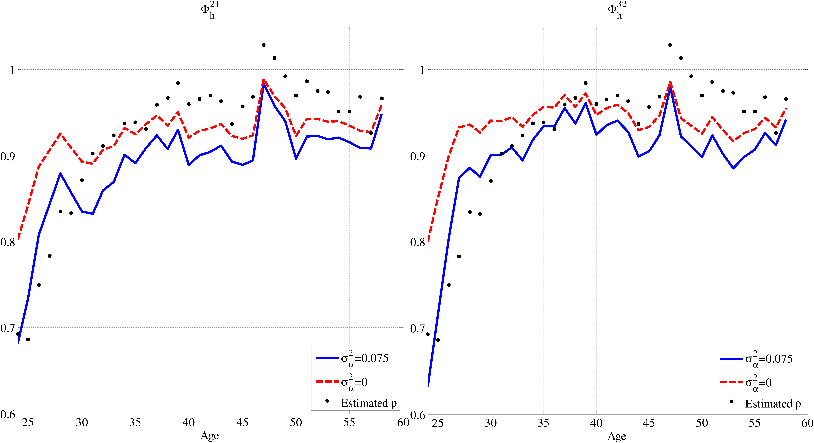
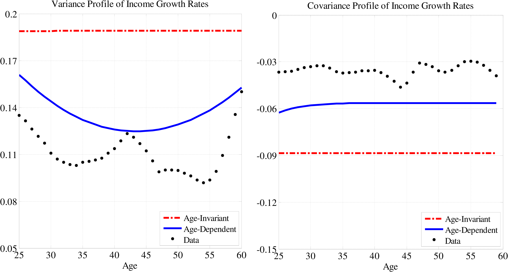
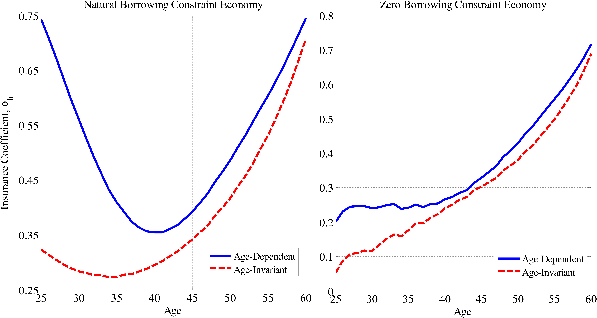
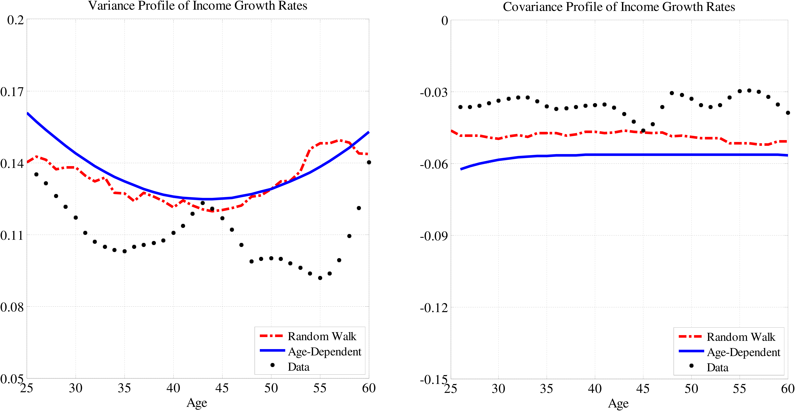

We would like to thank Dirk Krueger, Fatih Guvenen, Flavio Cunha, Greg Kaplan, Iourii Manovskii, Kjetil Storesletten, Giovanni L. Violante, Kurt Mitman, Sina Ates, and two anonymous referees as well as seminar participants at the University of Pennsylvania, World Congress of the Econometric Society in Shanghai, and Federal Reserve Board for their valuable comments. We also thank Fatih Guvenen for kindly sharing his dataset. The opinions expressed herein are those of the authors and not necessarily those of the Federal Reserve Bank of New York, the Federal Reserve Board, or the Federal Reserve System.
Federal Reserve Bank of New York, 33 Liberty Street, New York, NY, 10045; E-mail: Fatih.Karahan@ny.frb.org, http://www.newyorkfed.org/research/economists/karahan/index.html
Corresponding author. Federal Reserve Board, 20th and C Streets, NW, Washington, DC, 20551, USA. Tel.: +1202 721-4558. E-mail: Serdar.Ozkan@frb.gov, www.serdarozkan.me
\(\,\)
1 Introduction
Two important determinants of idiosyncratic labor income risk are the persistence and variance of shocks. How does the persistence of earnings change over the life cycle? Do workers at different ages face the same variance of idiosyncratic shocks? Answers to these questions are central to many economic decisions in the presence of incomplete financial markets. Uninsured idiosyncratic risk affects the dynamics of wealth accumulation, consumption inequality, and the effectiveness of self-insurance through asset accumulation. Thus, income risk is an important topic of study for quantitative macroeconomics. Moreover, the age profile of persistence and variance of shocks can provide information about the economic mechanisms underlying earnings risk. For these purposes, we propose and estimate a novel specification for idiosyncratic earnings that allows for a life-cycle profile in the persistence and variance of earnings shocks.
We are motivated by the observation that changes in earnings occur for different reasons over the working life. For young workers, job-to-job transitions might play an important role. Midway through a career, settling down into senior positions as well as bonuses, promotions, or demotions may account for workers’ earnings dynamics. Older workers are more likely to develop health problems that reduce their productivity. These changes differ in nature and, more specifically, in persistence and magnitude. Thus, we doubt that the variance and persistence of shocks are constant throughout a lifetime.
In our empirical analysis, we decompose residual earnings into an individual-specific fixed effect, a persistent component, and a transitory component. The novel feature of our specification is that both the persistence parameter of the \(AR(1)\) component and the variance of innovations to transitory and persistent components are allowed to vary by age. This paper, to the best of our knowledge, is the first study that estimates a lifetime profile of earnings persistence and variance together.1
We show that this specification is identified and estimate it using earnings data from the Panel Study of Income Dynamics (PSID). Our results reveal that persistence increases at early stages in the working life: Starting from \(0.75\), it rises to unity. These differences are sizable: \(70\) percent of a shock received during a worker’s early years in the labor market dies out over the next five years, whereas if the shock is received at age \(40\), \(15\) percent of it would fade out during the next five years. As for the variance of persistent shocks, we find a U-shaped profile (with a minimum of \(0.01\) and a maximum of \(0.05\)). A shock of one standard deviation implies a \(26\) percent change in annual earnings for a 24-year-old. The corresponding number for a \(40\)-year-old is only \(12\) percent. The variance of transitory shocks increases for the first five years but remains flat for the rest of the working life. These results suggest that the standard specification in the literature (with age-invariant persistence and variance of shocks) cannot capture the earnings dynamics of young workers.
We then ask the question of whether these life-cycle profiles are statistically significant. To tackle this question, we estimate life-cycle profiles by dividing the working life into three stages. Here, we assume that persistence and variances are constant within a stage but might differ from one stage to another. We test whether the persistence and the variance of shocks differ significantly across the three age intervals. We strongly reject the hypothesis of a flat profile for the persistence and the variance of persistent shocks, but not for the variance of transitory shocks.
The estimates of persistence in the literature are close to unity. The age-dependent estimate of persistence lies substantially below one for most of the working life. We argue that the high persistence in the literature is driven by targeting the linear, if not convex, increase in residual earnings inequality over the working life. Namely, estimation avoids lower levels of persistence, which would imply a concave rise in inequality. The age-dependent income process matches the inequality profile without high levels of persistence, thanks to the inverse relationship between the persistence and the variance of labor income shocks that our estimates reveal.
The features of the covariance structure in earnings that lead to the finding of age-dependent persistence are also consistent with alternative specifications of the income process where persistence is age-invariant but the variance is age-dependent. Specifically, a process containing a random walk component and an \(AR(1)\) component (as in Baker and Solon (2003) and Moffitt and Gottschalk (2011)) can generate an increase in the ratio of two-lag covariance to one-lag covariance over the life cycle, which we show is the key to the identification of the persistence profile. The advantage of the age-dependent specification is that it is more suitable for use in quantitative life cycle macro models, as it requires one fewer state variable.
To explore one possible mechanism behind the rise in persistence and the decrease in the variance of persistent shocks early in life, we study the implications of the job turnover model by Jovanovic (1979). In this model, unemployed workers match with firms and draw a match-specific productivity, unobservable to both the firm and the worker. Output is the sum of match productivity and a white noise. Firms pay workers their expected productivity. After observing the output, both the worker and the firm update their beliefs about the match productivity in a Bayesian fashion. In the end of the period, based on their beliefs, workers decide whether to quit and meet another firm or stay in the same job.
In a simple calibration exercise, we show that the model is quite successful in generating the age profiles in the data, that is, the increase in persistence and the decrease in variance of persistent shocks early in working life. The mechanism behind this result can be summarized as follows: The model implies that wages of stayers follow a random walk, whereas the autocorrelation of wages is very small for quitters. The overall persistence is a combination of these two. As workers age, they sort into jobs with better match productivities and settle down, which results in an increase in the number of stayers, thereby resulting in an increase in persistence. Similarly, as match productivity is being revealed, the magnitude of changes in beliefs, and thus wages, decrease and in turn the variance of persistent shocks declines. This mechanism is known to have empirical relevance (see Flinn (1986)). Therefore, we also view these results as complementary to our econometric analysis, providing justification for the age profiles.
We then investigate the welfare implications of the age-dependent income process. For this purpose, we study a standard life-cycle model featuring incomplete financial markets and a social security system under different specifications for idiosyncratic income risk, particularly age-dependent and age-invariant income processes.
We find that, in an economy with natural borrowing constraints (NBC), the age-dependent income process implies a much higher consumption insurance against persistent shocks: Around \(56\) percent of persistent shocks do not translate into consumption growth under the age-dependent income process, compared with \(38\) percent for the age-invariant specification. Most of this difference comes from young workers for whom the level of persistence is particularly low under the age-dependent process. In the presence of highly persistent shocks, agents refrain from borrowing against the possibility of a long sequence of low income realizations. Insurance against such shocks is therefore mostly through assets. This type of self-insurance is not possible for young workers, because they do not have enough wealth.
In an economy with zero borrowing constraints (ZBC), consumption insurance is lower for both specifications compared with the NBC economy. Now, the gap in consumption insurance between the age-dependent and the age-invariant processes is smaller: \(38\) percent for the age-dependent versus \(30\) percent for the age-invariant. The decrease in the gap is due to young workers who lack the borrowing option to insure against moderately persistent shocks.
We also compare the welfare costs of idiosyncratic risk implied by the age-dependent process with the age-invariant one. We find substantial differences: In the NBC (ZBC) economy, welfare costs of shocks accumulated in the labor market are \(3.13\) percent (\(5.80\) percent) under the age-dependent income process, whereas this number is \(4.76\) percent (\(6.80\) percent) for the age-invariant specification.
The rest of the paper is organized as follows: In Section 2, we describe the statistical model that we estimate, discuss its identification, and present our results. Section 3 presents the structural job turnover model. In Section 4, we present the life-cycle model that is used to study the consumption-savings implications of the age-dependent process. Section 5 concludes.
2 Empirical Analysis
In this section, we describe the statistical model for earnings and discuss the data and our benchmark sample. The empirical findings are presented at the end of this section.
2.1 An Age-Dependent Income Process
Let \(y_{h,t}^{i}\) denote the log of annual earnings of individual \(i\) at age \(h\) in time \(t\). To obtain the residual income \(\tilde{y}_{h,t}^{i}\), we run cross-sectional first-stage regressions of earnings on observables. More specifically, \[ y_{h,t}^{i}=f\left (X_{h,t}^{i};\theta _{t}\right)+\tilde{y}_{h,t}^{i}. \]
The first component in this specification, \(f\), is a function of age and schooling and captures the life-cycle component of earnings that is common to all workers. \(X_{h,t}^{i}\) is a vector of observables that includes a cubic polynomial in age and education dummies for less than a high school diploma, high school diploma, and a college degree. The parameter \(\theta\) is indexed by \(t\) to allow the coefficients on age and schooling to change over time and captures changes in returns to age and schooling that took place over time.
Residual income is decomposed into a fixed effect, an \(AR(1)\) component, and a transitory component. This representation is parsimonious, yet it successfully captures the salient features of the data. Therefore, it is widely used in the literature. This paper extends the standard specification to allow for a lifetime profile in the persistence parameter, and the variance of persistent and transitory shocks:
\[ \begin{aligned} \tilde{y}_{h,t}^{i} & = & \alpha ^{i}+z_{h,t}^{i}+\phi _{t}\varepsilon _{h}^{i},\\ z_{h,t}^{i} & = & \rho _{h-1}z_{h-1,t-1}^{i}+\pi _{t}\eta _{h}^{i},\,\, z_{1,t}^{i}\sim F\left (0,\pi _{t}^{2}\sigma _{z_{1}}^{2}\right) \end{aligned} \]
Here, \(\alpha ^{i}\) is an individual-specific fixed effect that captures the variation in initial conditions such as innate ability. \(\varepsilon _{h}^{i}\) is a fully transitory component with variance \(\sigma _{\varepsilon,h}^{2}\) that encompasses both measurement error and temporary changes in earnings such as bonuses and overtime pay.23 \(z_{h,t}^{i}\) is the persistent component of idiosyncratic income at age \(h\) that captures lasting changes in earnings such as promotions and health status. Each period, the individual is hit by a persistent shock of size \(\eta _{h}^{i}\). The magnitude of this shock is governed by the variance \(\sigma _{\eta,h}^{2}\), and the extent to which it lasts is determined by the persistence parameter \(\rho\). \(z_{1,t}^{i}\) captures the initial variation in the persistent component.4 The key innovation of our paper is to allow for an age profile in the variance of shocks, \(\sigma _{\eta,h}^{2}\) and \(\sigma _{\varepsilon,h}^{2}\), as well as in the durability of the persistent shocks, \(\rho _{h}\). The age profiles capture the idea that changes in earnings occur for different reasons throughout the life span.
A number of studies document the evolution of residual inequality for the United States in the past three decades (for example, Moffitt and Gottschalk (2011); Heathcote, Perri, and Violante (2010); and DeBacker, Heim, Panousi, and Vidangos (2011)). We follow Moffitt and Gottschalk (1995) and control for the change in residual inequality over time with \(\phi _{t}\) and \(\pi _{t}\), representing the time loading factors for transitory and permanent shocks, respectively.5
Having introduced the age-dependent income process, an immediate concern is identification. Can the variance–covariance structure of earnings data tell us how changes in earnings differ in variance and persistence over age and time together? The identification discussion allows us to connect the statistical model to the moments in the data and makes the estimation procedure meaningful.6 The next proposition establishes that the income process (1) is identified and provides a proof:
Proposition 1: Specification (1) is identified in levels up to the normalizations that \(\rho _{1}=\rho _{2}\), \(\pi _{1}=\phi _{1}=1,\phi _{T}=\phi _{T-1},\) and \(\sigma _{\eta,H}^{2}=\sigma _{\eta,H-1}^{2}\).
Proof: See Appendix A.
The rich panel structure of the PSID helps us to distinguish life-cycle effects from time effects: We observe individuals of a given age at different points in time and thus at a given year we observe individuals of different ages. This feature allows us to separate what effects are due to calendar time from a life-cycle phenomenon. For this particular reason, it is important to have a large number of cohorts in order to accurately separate these effects. This observation guides our sample selection process.
2.2 Sample Selection and Estimation Method
This section briefly describes the data and the variable definitions used in our empirical analysis. We use 30 waves of the PSID between 1968 and 1997. We estimate our model using both annual earnings and the average hourly wage of male heads of households.7 Here, we present the results for earnings data. Estimation results for wage data are reported in Appendix B.2; the results are qualitatively the same. In order to have a large number of cohorts, we include an individual in our benchmark sample if he satisfies the following criteria for three, not necessarily consecutive, years:8
We employ an equally weighted minimum distance estimator. We minimize the distance between the moments of the \((T\times T)\) and \((H\times H)\) empirical variance–covariance structure of residual earnings and their theoretical counterparts implied by income process (1). In particular, we target all the variance and covariance terms over age, \(cov\left (\tilde{y}_{h}^{i},\tilde{y}_{h+n}^{i}\right)\), and over time, \(cov\left (\tilde{y}_{t}^{i},\tilde{y}_{t+n}^{i}\right)\), to which at least 150 individuals contribute. This targeting strategy leaves us with 1,067 moments.9 To obtain the theoretical counterpart of \(cov\left (\tilde{y}_{h}^{i},\tilde{y}_{h+n}^{i}\right)\), we average \(cov\left (\tilde{y}_{h,t}^{i},\tilde{y}_{h+n,t+n}^{i}\right)\) over \(t\). Similarly, we compute the theoretical counterpart of \(cov\left (\tilde{y}_{t}^{i},\tilde{y}_{t+n}^{i}\right)\) by averaging \(cov\left (\tilde{y}_{h,t}^{i},\tilde{y}_{h+n,t+n}^{i}\right)\) over \(h\). Due to small sample considerations explained in Altonji and Segal (1996), our minimum distance estimator employs the identity matrix as the weighting matrix.
2.3 Estimation Results
In this section, we present our estimation results. The emphasis is on the existence of a nontrivial lifetime profile.
We estimate the lifetime profile of shocks and persistence in two ways. First, we estimate a nonparametric specification, that is, we do not impose any functional form on the lifetime profiles.10 Then, we assume the life-cycle profiles follow a cubic function of age and estimate its parameters. Figure 1 shows the results for persistence. The point estimates for the nonparametric estimation are plotted in dots along with the 95 percent bootstrap confidence interval in dashed lines; the point estimates are shown in Tables 6 and 7 in Appendix B.1. We employ a block bootstrap with 150 repetitions.11 The results of the cubic specification are shown in the solid blue line. The parameter estimates as well as bootstrap standard errors are reported in the left panel of Table 1.
Figure 1 reveals an interesting fact: Early in life, shocks are moderately persistent. Persistence starts at around \(0.70\) for young workers and increases with age up to unity by around age 40. The differences also appear to be economically large (although a quantitative evaluation needs to await the consumption model in Section 4). For example, more than \(70\) percent of a change in a 24-year-old’s earnings dies out in five years. This number is only around \(15\) percent for a 40-year-old worker.


The variance of persistent shocks, shown in Figure 2, follows a different pattern. It exhibits a U-shaped profile over the lifetime. Early in life, shocks are larger compared with those around age 40. The variance starts around \(0.06\), decreases to around \(0.01\) by age 35, and remains roughly flat for 10 years. Shocks toward the end of the life cycle are larger and exhibit a variance of around \(0.035\). These differences again appear to be economically large; a one-standard-deviation persistent shock implies a \(26\) percent change in earnings at age 24, whereas a one-standard-deviation shock implies only a \(12\) percent change at age 40.

| Age-Dependent \(\sigma _{\epsilon}^{2}\) | Age-Invariant \(\sigma _{\epsilon}^{2}\) | |||||||
| \(x\) | \(\gamma _{x,0}\) | \(\gamma _{x,1}\) | \(\gamma _{x,2}\) | \(\gamma _{x,3}\) | \(\gamma _{x,0}\) | \(\gamma _{x,1}\) | \(\gamma _{x,2}\) | \(\gamma _{x,3}\) |
| \(\sigma _{\alpha}^{2}\) | \(0.0803\) | \(0.0768\) | ||||||
| \(\left (0.0159\right)\) | \(\left (0.0167\right)\) | |||||||
| \(\sigma _{z_{1}}^{2}\) | \(0.0849\) | \(0.0803\) | ||||||
| \(\left (0.0180\right)\) | \(\left (0.0186\right)\) | |||||||
| \(\rho\) | \(0.7003\) | \(0.2974\) | \(-0.0978\) | \(0.0095\) | \(0.7596\) | \(0.2039\) | \(-0.0535\) | \(0.0028\) |
| \(\left (0.0604\right)\) | \(\left (0.1035\right)\) | \(\left (0.0607\right)\) | \(\left (0.0107\right)\) | \(\left (0.0524\right)\) | \(\left (0.1059\right)\) | \(\left (0.0670\right)\) | \(\left (0.0120\right)\) | |
| \(\sigma _{\eta}^{2}\) | \(0.0607\) | \(-0.0593\) | \(0.0215\) | \(-0.0021\) | \(0.0518\) | \(-0.0405\) | \(0.0105\) | \(-0.0002\) |
| \(\left (0.0129\right)\) | \(\left (0.0237\right)\) | \(\left (0.0135\right)\) | \(\left (0.0023\right)\) | \(\left (0.0100\right)\) | \(\left (0.0219\right)\) | \(\left (0.0135\right)\) | \(\left (0.0024\right)\) | |
| \(\sigma _{\epsilon}^{2}\) | \(0.0410\) | \(0.0221\) | \(-0.0069\) | \(0.0008\) | \(0.0564\) | |||
| \(\left (0.0177\right)\) | \(\left (0.0385\right)\) | \(\left (0.0233\right)\) | \(\left (0.0040\right)\) | \(\left (0.0049\right)\) | ||||
Note: The numbers in parentheses are bootstrap standard errors. \(\gamma\)’s are the coefficients of a cubic polynomial. Specifically, for \(x=\rho,\sigma ^2_{\eta},\sigma ^2_{\epsilon}: x_h=\gamma _{x,0}+\gamma _{x,1}*h/10+\gamma _{x,2}*(h/10)^2+\gamma _{x,3}*(h/10)^3.\)
Figure 3 plots the variance of transitory shocks. There is a sizable increase early on from around \(0.03\) to \(0.07\) by age \(35\). The profile is flat afterwards. As we will discuss in Section 2.4, this nonflat profile is not statistically significant.
What features of the data give rise to the increase in persistence early in the life cycle? In Appendix A, we argue that the ratio of two-period-ahead covariance to one-period-ahead covariance at age \(h\), corrected for fixed effects, (henceforth, \(\Phi _{h}^{21}\)) yields a consistent estimate for the persistence parameter at age \(h+1\). More specifically, abstracting from time effects, (5) implies \(\Phi _{h}^{21}=\left [cov\left (\tilde{y}_{h}^{i},\tilde{y}_{h+2}^{i}\right)-\sigma _{\alpha}^{2}\right]/\left [cov\left (\tilde{y}_{h}^{i},\tilde{y}_{h+1}^{i}\right)-\sigma _{\alpha}^{2}\right]=\rho _{h+1}\) for \(h=1,\ldots,H-2\). Alternatively, the ratio of three-period-ahead covariance to two-period-ahead covariance at age \(h\), \(\Phi _{h}^{32}\), is also a consistent estimator for \(\rho\). When correcting for fixed effects, we use our baseline estimate \((\sigma _{\alpha}^{2}=0.075)\), which is in line with the estimates in the literature. The left (right) panel of Figure 4 plots the empirical counterpart of \(\Phi _{h}^{21}\) (\(\Phi _{h}^{32}\)) in the solid line, along with the estimated persistence profile in dots. The age profile of \(\Phi _{h}^{21}\) (\(\Phi _{h}^{32}\)) closely resembles the estimate of the persistence profile: It increases from below \(0.7\) to above \(0.9\).
In general, the age profile of \(\Phi _{h}^{21}\) (\(\Phi _{h}^{32}\)) depends on the level of fixed effects. To check for robustness, we plot \(\Phi _{h}^{21}\) (\(\Phi _{h}^{32}\)) for the case where there are no fixed effects \((\sigma _{\alpha}^{2}=0)\), shown in dashed lines in the left (right) panel of Figure 4. We see that the increase in persistence is robust to the variance of fixed effects, though the steepness depends on it. Note that the estimation of an upward sloping persistence profile is a result of targeting a fairly complicated variance–covariance structure. Figure 4 confirms this increase over the lifetime from a much simpler look at the data.
Some of the changes in persistence and variance that we observe might be driven by young workers who move from part-time to full-time employment or by older workers who are heterogeneous in retirement age. To control for the effect of part-time workers, we restrict our sample to only full-time workers in Appendix B.5. The conclusion for persistence is similar: Persistence is increasing. Though, the conclusion for the variance of persistent shocks is somewhat different. It is still the case that the variance of persistent shocks for younger workers is significantly larger than the variance of shocks for middle-aged workers. However, the difference in the persistence of shocks between the middle age and old age is not significant. This lack of significance suggests that some of the increase in the variance of persistent shocks for older workers is driven by early or partial retirement.

Note: The left panel plots the ratio of two-year-ahead covariance to one-year-ahead covariance, \(\Phi ^{21}=\frac{cov(y_{h},y_{h+2})-\sigma _{\alpha}^{2}}{cov(y_{h},y_{h+1})-\sigma _{\alpha}^{2}}\), corrected for the variance of fixed effects, along with the estimated persistence profile. The right panel shows the ratio of three-year-ahead covariance to one-year-ahead covariance, \(\Phi ^{32}=\frac{cov(y_{h},y_{h+3})-\sigma _{\alpha}^{2}}{cov(y_{h},y_{h+2})-\sigma _{\alpha}^{2}}\), also corrected for fixed effects. All series are smoothed with a moving average method with a three-year span.
To explore the differences in age profiles between workers with and without college degrees, we estimate the age-dependent income process on a sample of workers with a college degree and on a sample of workers without one. The results are reported in Appendix B.9, Tables 16 and 17. We find that persistence for college workers is increasing over the working life, as opposed to being hump-shaped for the non-college sample. The variance of persistent shocks is decreasing for college graduates and U-shaped for those without a college degree.
2.4 Significance Tests
We now turn to the question of statistical significance, that is, we want to see whether the nonflat pattern is statistically significant. For this purpose we consider a model in which working life is divided into three stages (age intervals): young, middle, and old ages. This model restricts the persistence and variances to be constant within an interval but allows them to differ from one to another. The age bins correspond to ages 24 to 33 (young), 34 to 52 (middle), and 53 to 60 (old).12 These intervals allow us to identify systematic differences across age intervals.
Point estimates are shown in the first three columns of Table 2 along with bootstrap standard errors in parentheses. The results, once again, point to the same life-cycle profiles of persistence and variance of shocks. We test whether the persistence profile exhibits a hump-shaped pattern. Similarly, we investigate if the variance of persistent shocks follows a U-shape. Finally, we test whether the increase in transitory shocks is statistically significant. Formally, the null hypotheses are: \(H_{0}:\rho _{1}\geq \rho _{2}\), \(H_{0}:\rho _{2}\leq \rho _{3}\), \(H_{0}:\sigma _{\eta,1}^{2}\leq \sigma _{\eta,2}^{2}\), \(H_{0}:\sigma _{\eta,2}^{2}\geq \sigma _{\eta,3}^{2}\), \(H_{0}:\sigma _{\epsilon,2}^{2}\leq \sigma _{\epsilon,1}^{2}\), and \(H_{0}:\sigma _{\epsilon,2}^{2}\leq \sigma _{\epsilon,3}^{2}\). The results are shown in the last two columns of Table 2.
| \(\sigma _{\alpha}^{2}\) | \(\sigma _{z_{1}}^{2}\) | ||||
| \(0.0707\) | \(0.0767\) | ||||
| \(\left (0.0268\right)\) | \(\left (0.0255\right)\) | ||||
| \([24,33]\) | \([34,52]\) | \([53,60]\) | Test 1 p-value | Test 2 p-value | |
| \(H_{0}:\rho _{1}\geq \rho _{2}\) | \(H_{0}:\rho _{2}\leq \rho _{3}\) | ||||
| \(\rho\) | \(0.8783\) | \(0.9712\) | \(0.9608\) | \(0.00\) | \(0.63\) |
| \(\left (0.0283\right)\) | \(\left (0.0141\right)\) | \(\left (0.0223\right)\) | |||
| \(H_{0}:\sigma _{\eta,1}^{2}\leq \sigma _{\eta,2}^{2}\) | \(H_{0}:\sigma _{\eta,2}^{2}\geq \sigma _{\eta,3}^{2}\) | ||||
| \(\sigma _{\eta}^{2}\) | \(0.0273\) | \(0.0130\) | \(0.0258\) | \(0.00\) | \(0.04\) |
| \(\left (0.0045\right)\) | \(\left (0.0026\right)\) | \(\left (0.0072\right)\) | |||
| \(H_{0}:\sigma _{\epsilon,2}^{2}\leq \sigma _{\epsilon,1}^{2}\) | \(H_{0}:\sigma _{\epsilon,2}^{2}\geq \sigma _{\epsilon,3}^{2}\) | ||||
| \(\sigma _{\epsilon}^{2}\) | \(0.0558\) | \(0.0588\) | \(0.0675\) | \(0.35\) | \(0.79\) |
| \(\left (0.0063\right)\) | \(\left (0.0066\right)\) | \(\left (0.0109\right)\) |
Note: [24,33], [34,52], [53,60] are age intervals in which the persistence and variances are assumed to be constant. Point estimates are shown in the first three columns along with bootstrap standard errors in parentheses. The last two columns report p-values for bootstrap significance tests.
We find that the persistence for young workers is statistically smaller than that of middle-aged workers. However, we cannot reject the null hypothesis that the persistence in the last age bin is the same as in the second. As for the variance of persistent shocks, the parameter of the second age interval is significantly lower than that of the first and third intervals (at 5 percent significance level). However, the nonflat profile in the variance of transitory shocks is insignificant with p-values of \(0.35\) and \(0.79.\)
Note that the standard errors of linear and higher-order terms in the cubic specification are large, such that one might suspect nonflat profiles implied by this specification to be insignificant (see Table 1). However, unlike quadratic polynomials, cubic polynomials can generate hump-shaped (or U-shaped) profiles for different combinations of signs of coefficients. Indeed, the correlation structure between parameters of the cubic polynomial is such that for almost all bootstrap runs, the implied persistence profile is increasing and the variance profile for persistent shocks is U-shaped. However, for the lifetime profile of the transitory variance, a significant number of bootstrap repetitions does not imply an increase over the first 10 to 15 years. In a previous version of this paper (Karahan and Ozkan (2009)), we impose a quadratic polynomial on lifetime profiles and find that both the linear and quadratic terms are significant for persistence and for the variance of persistent shocks.
Overall, these results suggest that the persistence and the variance of persistent shocks have nonflat profiles over the life cycle but not the variance of transitory shocks. Thus, from now on in our analysis, we assume that the variance of transitory shocks is age-invariant and use estimates of the cubic specification with a constant variance of transitory shocks. The results are reported in the right panel of Table 1.
2.5 Comparison with the Literature
We now compare the age-dependent process with several contenders in the literature. We start with the age-invariant version of this specification, that is, a specification consisting of a fixed effect, an \(AR(1)\) component, and an i.i.d. transitory component, where the persistence and variance of shocks are age-invariant. The age-invariant specification is widely used in quantitative models featuring income risk. In order for these cases to be comparable, we estimate this model on the benchmark sample. The estimates are shown in dashed lines on Figures 1 to 3 as well as in Table 3. Our estimate of persistence, \(0.98\), is in line with the estimates in the literature, which range from \(0.96\) to \(1.0\). It is surprising to see that for most of the life cycle, persistence in the age-dependent process is significantly lower than the estimate of persistence for the age-invariant specification. As these examples show, such differences can be economically significant.
| \(\sigma _{\alpha}^{2}\) | \(\rho\) | \(\sigma _{z_{1}}^{2}\) | \(\sigma _{\eta}^{2}\) | \(\sigma _{\epsilon}^{2}\) | |
| Point Estimates | \(0.0146\) | \(0.9802\) | \(0.0774\) | \(0.0113\) | \(0.0831\) |
| Standard Errors | \(\left (0.0265\right)\) | \(\left (0.0114\right)\) | \(\left (0.0157\right)\) | \(\left (0.0016\right)\) | \(\left (0.0087\right)\) |
Note: Table reports estimates of the age-invariant process. \(\sigma ^2_{z_1}\) is the initial variance of the persistent component. Note that the estimate of \(\sigma ^2_{\alpha}\) is smaller than the estimates in the literature (see Kaplan (2010)). This difference is due to the fact that the specification also allows for a nonzero initial condition in the persistent component.
We argue that targeting the lifetime profile of residual inequality in the data results in an upward bias in persistence if one does not allow for age-specific persistence and variance. For the age profile of residual inequality, we first compute \(\widehat{var(\tilde{y}_{h,t})}\) for every year \(t\) and age \(h\). An individual in year \(t\) contributes to \(\widehat{var(\tilde{y}_{h,t})}\) if he is between ages \(h-2\) and \(h+2\).13 We then regress these variances on a full set of age and year dummies and report the age dummies. The resulting profile is shown in Figure 5. The rise in residual inequality over the lifetime is almost linear, if not convex. The increase is particularly steep after age \(35\).
For the age-invariant process, the corresponding theoretical variances are given by \[ var(\tilde{y}_{h})=\sigma _{\alpha}^{2}+\sigma _{\eta}^{2}\sum _{j=1}^{h-1}\rho ^{2j}+\sigma _{z_{1}}^{2}\rho ^{2h}+\sigma _{\epsilon}^{2}\,, \] where \(\sigma _{z_{1}}^{2}\) represents the initial variance of the persistent component. So long as \(\rho <1\), residual inequality has a well-defined limit, say, \(var^{*}(\tilde{y})\). It can easily be shown that \(var(\tilde{y}_{h})\) will converge to \(var^{*}(\tilde{y})\) from below, in a concave fashion. The degree of concavity is more pronounced the smaller \(\rho\) is than \(1\). In the case of a unit root, the variance profile will be linear. The empirical variance profile in Figure 5 implies that the fit would be poor if \(\rho\) is too far away from \(1\). Targeting these moments puts an upward pressure on \(\rho\) and drives it closer to \(1\).14

Note: This figure compares the lifetime profile of residual inequality implied by the age-dependent, age-invariant specifications, and its empirical counterpart. For the age-dependent specification, we use the estimates of the cubic specification with constant variance of transitory shocks. For the empirical counterpart, we control for time effects.
Figure 5 also plots the inequality profile implied by the cubic specification of the age-dependent process in the dash-dotted line. The model captures the increase in lifetime inequality even if persistence for young workers is very low. This increase is captured by means of the inverse relationship between persistence and the variance of labor income shocks: When persistence goes up with age, the additional increase it induces in inequality is compensated by a decrease in the variance and vice versa.
Meghir and Pistaferri (2004) estimate a process that consists of a permanent component and an \(MA(1)\) transitory component: \(\tilde{y}{}_{iht}=\alpha _{i}+p_{iht}+e_{iht},\) where \(p_{iht}=p_{ih-1t-1}+\zeta _{iht},e_{iht}=\epsilon _{iht}+\theta \epsilon _{ih-1t-1}\) and the shocks \(\zeta _{iht}\) and \(\epsilon _{iht}\) are uncorrelated at all leads and lags. This process can also generate an increase in the ratio of two-lag covariance to one-lag covariance over the life cycle (see Figure 4), which we argue is the key to the identification of the increase in persistence. For this income process, the ratio equals: \[ \Phi _{h}^{21}=\frac{cov(\tilde{y}_{h},\tilde{y}_{h+2})-\sigma _{\alpha}^{2}}{cov(\tilde{y}_{h},\tilde{y}_{h+1})-\sigma _{\alpha}^{2}}=\frac{var(p_{h})}{var(p_{h})+\theta var(\epsilon _{h})}=\frac{1}{1+\theta \frac{var(\epsilon _{h})}{var(p_{h})}}. \] Because \(var(p_{h})\) increases with age, \(\frac{1}{1+\theta \frac{var(\epsilon _{h})}{var(p_{h})}}\) is increasing over the life cycle.
However, for this specification, the ratio of three-lag covariance to two-lag covariance is constant and equal to one, which is contradictory to the data (see Figure 4): \[ \Phi _{h}^{32}=\frac{cov(\tilde{y}_{h},\tilde{y}_{h+3})-\sigma _{\alpha}^{2}}{cov(\tilde{y}_{h},\tilde{y}_{h+2})-\sigma _{\alpha}^{2}}=\frac{var(p_{h})}{var(p_{h})}=1. \]
A process containing a random walk component and an \(AR(1)\) component with age dependence in the variance of innovations (as in Baker and Solon (2003) and Moffitt and Gottschalk (2011)) can generate most of the age dependence in the variance–covariance structure that we use to identify the age profile of persistence and variance of shocks (see Figure 4). In Appendix B.10, we estimate such a process and find that it fits the variance–covariance structure both in levels and in differences as well as the age-dependent income process (see the next section for the fit of the age-dependent income process on the moments in differences). The advantage of the age-dependent specification is that it is more suitable for use in quantitative life-cycle macro models, as it requires one fewer state variable.
Guvenen (2009) argues for the existence of heterogeneity in income growth rates. The evidence he brings forward for growth rate heterogeneity is twofold: First, he points to the convexity in the variance profile of earnings, and second, he exploits the shape of higher-order covariances, which features an increase at higher lags. It is worthwhile to note that the age-dependent income process can naturally capture these features of the data without growth rate heterogeneity. In fact, the age profile of residual inequality implied by the age-dependent process is convex for most of the life cycle.
2.6 The Fit for Income Growth Rates
It is well known in the literature that the estimates of canonical income processes using levels are strikingly different than the estimates using income growth rates, suggesting misspecification of the model (see Krueger, Perri, Pistaferri, and Violante (2010)). This section investigates the performance of the age-dependent process in fitting the variance of income growth rates as well as one-lag covariances.
The theoretical moments for the age-dependent process (abstracting from time effects) are given by:
\[ \begin{aligned} var\left (\Delta y_{i,h}\right) &= \left (\rho _{h-1}-1\right)^{2}var\left (z_{i,h-1}\right)+\sigma _{\eta,h}^{2}+\sigma _{\epsilon,h}^{2}+\sigma _{\epsilon,h-1}^{2}\\ \mbox{and \,}cov\left (\Delta y_{i,h},\Delta y_{i,h+1}\right) &= \rho _{h-1}\left (\rho _{h-1}-1\right)\left (\rho _{h}-1\right)var\left (z_{h-1}^{i}\right)+(\rho _{h}-1)\sigma _{\eta,h}^{2}-\sigma _{\epsilon,h}^{2}. \end{aligned} \]
To compute the empirical counterparts, we compute these moments for all \(\left (h,t\right)\) cells and regress them on age and year dummies. The dots in the left panel of Figure 6 plot the resulting age dummies, which reveals a U-shaped profile. Theoretical moments implied by the cubic specification, shown in the solid line, show that the age-dependent process does a good job of capturing the U-shape.15 However, the same moments implied by the age-invariant process, shown in the dashed line, cannot match this profile.
To assess how the age-dependent process fits the covariance profile of differences at one lag, we plot the empirical and theoretical counterparts of this profile on the right panel of Figure 6. In the data, the covariance profile is almost flat over the lifetime, which is very similar to what is implied by the age-dependent specification. However, the empirical covariance is closer to zero. As for the age-invariant process, the covariance profile is also flat but much further away from zero compared with the age-dependent specification.
Overall, we conclude that the age-dependent income process achieves a better fit for the moments in levels without worsening the fit for the moment structure in differences. If anything, it fits the empirical variance and one-lag covariance profiles better than the age-invariant specification.

3 An Economic Rationale for the Age-Dependent Specification
Through a series of econometric analyses, we have shown that the persistence and variance of innovations to earnings exhibit nontrivial age profiles. A natural follow-up question would be, Which economic forces may give rise to these profiles? In this section, we elaborate on the economic rationale behind having an age-dependent income process.
To speculate about one mechanism, these profiles could be explained by differences in insurance opportunities against earnings shocks between young and old workers. For example, in the case of an adverse demand shock to an individual’s occupation, one might switch to a different occupation if he is young (see Kambourov and Manovskii (2008)). For an old worker, though, switching to a different job is more costly (for example, because of occupation-specific human capital). Therefore, shocks of the same nature can translate into innovations with different persistence over the working life.
Note that the increase in persistence and the decrease in variance of persistent shocks take place in the first 10 years of the working life, which coincides with the period when job turnover of workers is high (see Topel and Ward (1992)). Thus, another mechanism, again related to mobility, would be learning about the match quality, first studied by Jovanovic (1979). In his setup, neither the worker nor the firm know the productivity of the match before employment. After observing the output, match productivity is revealed to both parties in a Bayesian fashion. The revelation of the match productivity generates endogenous movements in wages and job turnover. Flinn (1986) presents evidence from the National Longitudinal Survey of Youth (NLSY/66) in favor of this theory. We now study the wage dynamics implied by this model.
3.1 A Model of Job Mobility
Our economy consists of a continuum of workers endowed with one unit of time per period. Workers maximize the present value of their lifetime earnings and discount future earnings at a constant interest rate of \(r\). They are subject to death with constant probability \(\delta\). There is a continuum of firms that have access to a constant-returns-to-scale production technology. Labor is the only input to the production.
At the beginning of a period, unemployed workers meet with firms, form a match, and draw a productivity specific to the match, \(\xi\), from a normal distribution with mean \(\mu _{\xi}\) and variance \(\sigma _{\xi}^{2}\). The match-specific productivity is not known by the firm or the worker. Output of the match, \(y_{t}\), is given by \(y_{t}=\xi +\nu _{t}\), where \(\nu _{t}\) is an i.i.d. normal random variable with mean zero and variance \(\sigma _{\nu}^{2}\). After observing the output, workers and employers update their beliefs about the match productivity in a Bayesian fashion. Because the information set of the worker and the firm are the same, their beliefs are identical. By means of normality assumptions, this belief is normally distributed as well.
Let \(m_{t|t-1}\) denote the mean of the belief of a match about \(\xi\) with tenure \(t\) conditional on all of the information up to \(t-1\), and let \(1/p_{t}\) denote the variance, thereby \(p_{t}\) denoting the precision. Similarly, \(p_{\xi}=1/\sigma _{\xi}^{2}\) and \(p_{\nu}=1/\sigma _{\nu}^{2}\) denote the precision of the distribution of \(\xi\) and \(\nu _{t}\), respectively. Finally, \(\varsigma _{t}\sim N(0,1/p_{t})\) represents the deviation of the belief from the true productivity. The law of motion for these are governed by:
\[ \begin{aligned} m_{t+1|t} & = & m_{t|t-1}\frac{p_{t}}{p_{t}+p_{\nu}}+y_{t}\frac{p_{\nu}}{p_{t}+p_{\nu}}, \\ p_{t} & = & p_{\xi}+(t-1)p_{\nu},\\ \mbox{and \,}y_{t} & = & \underbrace{m_{t|t-1}+\varsigma _{t}}_{\xi}+\nu _{t}. \end{aligned} \]
For simplicity, we assume that firms pay workers their expected productivity before production takes place \(\left (w_{t}=m_{t|t-1}\right)\). After updating his beliefs, a worker decides whether to break the match. We assume that upon breaking the match, he immediately meets another employer with a new match productivity.16
3.2 A Quantitative Evaluation of the Model
In order to evaluate the performance of this model on earnings dynamics, we calibrate the model, simulate it, and then estimate the age-dependent income process using residual wages from the simulated data. Our exercise shows that the model has the potential to replicate our empirical findings for nonflat age profiles.
3.2.1 Calibration
This model is fairly stylized, with only five parameters: \(r,\delta,\mu _{\xi},\sigma _{\xi}^{2},\) and \(\sigma _{\nu}^{2}\). The model period is one year. The interest rate, \(r\), is set to an annual rate of \(3\) percent. We set \(\delta\) to \(1/37\) to match an average working life of \(37\) years, motivated by our dataset. The model allows the normalization of the mean of match productivity; we set \(\mu _{\xi}\) to a computationally convenient value.
We calibrate the remaining two parameters—the variance of match productivity, \(\sigma _{\xi}^{2}\), and the variance of the i.i.d. shock, \(\sigma _{\nu}^{2}\)—by targeting two moments from our empirical findings. \(\sigma _{\xi}^{2}\) has a pronounced effect on the level of the variance of persistent shocks. In the data, changes in the variance of persistent shocks at older ages are due to reasons not captured by this model (for example, health shocks). Thus, we target the average of the first 10 years’ variance of persistent shocks.
In the model, an increase in \(\sigma _{\nu}^{2}\) increases the time it takes for the match quality to be revealed. This increase, in turn, increases the time to settle down into jobs, which can be approximated by average persistence over the last 25 years of a working life.17 Our second target is therefore taken to be the average of persistence over the last 25 years of a working life. At no point in the calibration do we target the profile of persistence and the variance of shocks. Table 4 summarizes our calibration exercise.
| Parameter | Value | |
| \(r\), interest rate | \(3\%\) | |
| \(\delta\), death probability | \(1/37\) | |
| \(\mu _{\xi}\), mean of match productivity | \(10\) | |
| \(\sigma _{\xi}^{2}\), variance of match productivity | \(0.50\) | |
| \(\sigma _{\nu}^{2}\), variance of i.i.d. productivity shock | \(0.50\) | |
| Empirical Moments Used in Calibration | ||
| Moment | Data | Model |
| Average variance of persistent shocks in first 10 years | \(0.0495\) | \(0.0490\) |
| Average persistence profile in last 25 years | \(0.968\) | \(0.965\) |
3.2.2 Simulation Results
We simulate 10,000 individuals, run the first stage regressions to obtain the residuals, and estimate the nonparametric specification of the age-dependent process. Figure 7 shows the results.
The top panel shows that persistence profile is increasing with age. The mechanism behind this increase can be summarized as follows. First, let us consider a worker who stays in the same job. His wage can be expressed as the sum of his previous wage and a mean-zero innovation, implying a random walk. Namely, \(w_{t}=m_{t|t-1}\). On one hand, Equation (2) implies that \(w_{t+1}=w_{t}\frac{p_{t}}{p_{t}+p_{\nu}}+y_{t}\frac{p_{\nu}}{p_{t}+p_{\nu}}=w_{t}\left (\frac{p_{t}}{p_{t}+p_{\nu}}+\frac{p_{\nu}}{p_{t}+p_{\nu}}\right)+\frac{p_{\nu}}{p_{t}+p_{\nu}}\left (\varsigma _{t}+\nu _{t}\right)=w_{t}+\chi _{t},\) where \(\chi _{t}\sim N(0,\frac{p_{\nu}}{p_{t}\left (p_{t}+p_{\nu}\right)})\). On the other hand, job switchers always get the unconditional mean of the match-specific component \(\mu _{\xi}\), implying a low correlation between current and future wages. Therefore, persistence is lower for them. The persistence of income changes in the overall sample is a combination of the persistence of these two subsamples. Over the working life, the fraction of switchers declines with age because workers settle into more-productive jobs as they age.18 Thus, they are less likely to switch to other jobs, which implies a rising persistence profile. Furthermore, the bottom panel of Figure 7 shows a decreasing variance profile for persistent shocks because both the number of stayers increases and the variance of innovations to wages declines with tenure for stayers. Namely, the variance of \(\chi _{t}\) is decreasing because \(p_{t}\) is increasing in \(t\).

This section presented a theoretical background for our empirical findings. We have illustrated that a very stylized model of learning (similar to that of Jovanovic (1979)) implies an increasing persistence profile and a decreasing variance over the working life. The mechanism discussed here is known to have empirical relevance (see Flinn (1986)). Therefore, we also view these results as complementary to our econometric analysis in Section 2, providing independent evidence for the age profiles.
4 Consumption-Savings Implications
There is a large amount of literature (see Cochrane (1991); Mace (1991); Attanasio and Davis (1996); and Blundell, Pistaferri, and Preston (2008)) that rejects full consumption insurance for the U.S. economy, making the nature of labor income risk an important object for economic research. This paper, so far, has established the existence of a nonflat lifetime profile in persistence and variance of shocks. We now investigate consumption-savings implications. In particular, we are interested in the insurability of labor income shocks and the welfare costs of idiosyncratic risk under different specifications for earnings risk. To address these issues, we consider a standard life-cycle model that features incomplete financial markets and a social security system, and compare the implications of the age-dependent income process with the age-invariant process.
The economy is populated by a continuum of agents that have preferences over consumption that are ordered according to E{h=1}^{H}^{h}u(c{h}^{i}), where \(c_{h}^{i}\) denotes the consumption of agent \(i\) at age \(h.\) They engage in labor market activities for the first \(R\) years of their life and retire afterward. After retirement, they live up to a maximum age of \(H.\)
Financial markets are incomplete in that agents can only buy and sell a risk-free bond. Letting \(r\) denote the risk-free interest rate and \(a_{h}^{i}\) denote the asset level of individual \(i\) of age \(h,\) the budget constraint is given by
\[ \begin{aligned} c_{h}^{i}+\frac{a_{h+1}^{i}}{1+r} & = & a_{h}^{i}+y_{h}^{i}\,, \end{aligned} \]
where \(y_{h}^{i}\) is the labor earnings at age \(h.\) Agents face an age-dependent borrowing constraint, \(\bar{{A_{h}}}\). We study welfare costs in two economies that differ in their borrowing limit: an NBC economy and a ZBC economy.19 It is important to investigate these two cases, because the evaluation of the tradeoff between persistence and variance of shocks depends crucially on the extent of the borrowing limit. On the one hand, if borrowing limits are loose, the not-so-persistent but large shocks to young workers can be well insured by borrowing. On the other hand, in the case of tight borrowing limits, the magnitude of shocks matters more.
While in the labor market, a worker’s earnings are composed of a deterministic part, which is common to everyone, and an idiosyncratic component, which captures individuals’ earnings risk. We consider two specifications for the idiosyncratic component: i) the age-dependent income process, and ii) the age-invariant process as discussed in Section 2.5. The first is calibrated according to the cubic specification with constant variance of transitory shocks reported in Table 1. The parameters of the latter come from the estimates reported in Table 3. The deterministic component of earnings is estimated using the PSID data.
There is a social security system that pays a pension after retirement. We model the retirement salary as a function of the fixed effect and the persistent component of income in the last period, \(ln\, y_{h}^{i}=\Phi (\alpha ^{i},z_{R}^{i})\). This function is modeled as in Guvenen, Kuruscu, and Ozkan (2011) and is set to mimic the properties of the U.S. Social Security System.
One period in our model corresponds to a calendar year. Agents enter the economy at age 24, retire at 60, and die with probability \(1\) at age 84. We assume constant relative risk aversion (CRRA) preferences and set the parameter of relative risk aversion to \(2\). We take the risk-free interest rate to be \(3\) percent. We pin down the discount factor \(\beta\) by targeting an aggregate wealth-to-income ratio of 3. The Bellman equations of the model, and further detail of its calibration are in Appendix C.
4.1 Consumption Insurance against Labor Income Shocks
We now turn to the differences in consumption insurance induced by the age-dependent and the age-invariant processes. Our methodology is similar in spirit to Kaplan and Violante (2010). For each specification, we calibrate the discounting factor, \(\beta\), to match an aggregate wealth-to-income ratio of \(3\). We compute the degree of consumption insurance at age \(h\) as: \[ \phi _{h}=1-\frac{cov(\Delta c_{h}^{i},\eta _{h}^{i})}{var(\eta _{h}^{i})}, \] where \(\eta _{h}^{i}\) is the persistent shock faced by worker \(i\) at age \(h\). This equation measures the amount of change in the persistent component that does not translate into consumption growth.
Figure 8 plots \(\phi _{h}\) over the life cycle for both processes in the NBC and ZBC economies. It is clear that persistent shocks from the age-dependent process are better insured throughout the lifetime. In the NBC economy, on average, \(56\) percent of persistent shocks are insured under the age-dependent process, whereas the corresponding number for the age-invariant process is only \(40\) percent.
Strikingly, most of this difference comes from younger workers. In the age-invariant process, the profile of insurance tracks the profile of assets. Persistence is constant and high throughout the working life, and agents abstain from borrowing in response to a highly persistent bad income shock. Therefore, insurance against such shocks is mainly through assets, which there are typically fewer of in young households. The increase in assets over the lifetime allows workers to better handle highly persistent shocks, which results in an increasing consumption insurance profile.
However, for the age-dependent income process, insurance for young households is much larger, precisely because the \(AR\left (1\right)\) component is moderately persistent for them. Consumption insurance first decreases until middle age and then increases until the end of working life. The U-shape is due to the combination of two opposing effects: i) households get richer and can better insure themselves against persistent shocks as they age, and ii) shocks become more persistent, making self insurance harder for households. In the initial phase of the life cycle (ages 24 to 40) the latter effect dominates the former, and insurance decreases with age. Later on, assets are large enough that they compensate the increase in persistence. Thus, insurance increases with age.
Insurance decreases for both specifications once we impose no borrowing (right panel of Figure 8), but it is still larger under the age-dependent income process, though by a smaller margin. The decrease in the gap is due to young households, who can insure against moderately persistent shocks via borrowing in the NBC economy.

4.2 Welfare Costs of Earnings Risk
We now turn to welfare costs of idiosyncratic risk under the two processes. Recall that the low levels of persistence under the age-dependent process are compensated by the larger variance of shocks (Figures 1 and 2). On the one hand, lower persistence implies better insurability. On the other hand, larger variance implies more instability. In order to evaluate this tradeoff quantitatively, we compute the fraction of lifetime consumption that an individual would be willing to give up in order to live in an economy without earnings risk.20
| Welfare Costs | Insurance | ||
| (1) | (2) | (3) | |
| NBC Economy | |||
| Age-Dependent | \(15.22\%\) | \(3.13\%\) | \(0.56\) |
| Age-Invariant | \(14.73\%\) | \(4.76\%\) | \(0.38\) |
| ZBC Economy | |||
| Age-Dependent | \(18.20\%\) | \(5.80\%\) | \(0.38\) |
| Age-Invariant | \(16.8\%\) | \(6.80\%\) | \(0.30\) |
Note: Column (1) shows the welfare cost of total idiosyncratic risk including risk due to fixed effects, initial variation in persistent component \((z^i_1),\) as well as life-cycle shocks. Column (2) presents welfare costs of life-cycle shocks, that is, shocks accumulated after workers enter the labor force. Column (3) shows the insurance coefficient against persistent shocks.
The upper panel of Table 5 shows the results for the NBC economy. Column (1) shows the total welfare cost of idiosyncratic risk, that is, welfare costs of income risk for a person who has not yet entered the labor force. The age-dependent income process delivers higher welfare costs. These higher welfare costs are not surprising as the level of inequality both in the beginning and at the end of the life cycle is higher for the age-dependent specification (see Figure 5). What we want to emphasize is not the welfare cost of inequality but the welfare cost of the rise in inequality over the life cycle, that is, the welfare cost of labor income shocks accumulated over the life cycle. For this purpose, column (2) reports the welfare costs of labor income shocks for a person with the average fixed effect \((\alpha ^{i}=0)\) and the average initial persistent component \((z_{1}^{i}=0)\). In the NBC economy, a worker subject to the age-invariant income process is willing to give up \(4.76\) percent of his consumption every period in order to have perfect insurance against labor income shocks. The same number is only \(3.13\) percent for a worker subject to the age-dependent specification.21
The bottom panel of Table 5 presents the results for the ZBC economy.22 As expected, welfare costs have increased compared with the NBC economy for both specifications. Note that the increase in the welfare cost of labor income shocks accumulated over the lifetime is larger for the age-dependent process (from \(3.13\) percent to \(5.80\) percent for the age-dependent process and from \(4.76\) percent to \(6.80\) percent for the age-invariant process). Thus, the difference between the two processes decreases from \(1.63\) percent in the NBC economy to \(1\) percent in the ZBC economy (see column 2). We conclude that the welfare cost of labor income risk is substantially different for the two processes; however, the margin depends on the amount of borrowing allowed.
5 Conclusion
Most of the existing literature on income processes has assumed constant persistence and variance of income shocks over the life cycle. As a result, macroeconomists have calibrated life-cycle models using these flat profiles. In this paper, we have estimated a novel specification for labor income risk that allows the persistence and variance of shocks to change over the lifetime. Our results reveal that persistence is only moderate for young workers and increases up to unity by age 40. The variance of persistent shocks exhibits a U-shaped profile. These results suggest that the standard specification in the quantitative macro literature (with age-invariant persistence and variance of shocks) cannot capture the earnings dynamics of young workers. We also have argued that these nonflat profiles have significant implications for consumption insurance. The welfare costs of idiosyncratic risk implied by the age-dependent income process is significantly lower compared with the age-invariant process, however the margin depends on the amount of borrowing allowed. This difference has important implications for the evaluation of policies.23
These results also have implications for the Credit CARD Act of 2009. One of the provisions of this act restricts individuals under the age of 21 from obtaining credit cards without the consent of their parents. If shocks were completely permanent, then access to credit would be less crucial because younger workers would not use the option of borrowing. This paper presents evidence that young workers face very large variances of income shocks that are moderately persistent. As discussed above, the borrowing limit for them has significant welfare consequences under such an income process. Thus using credit lines in this environment can go a long way as an insurance mechanism, making access to credit crucial for young workers.
There is a large amount of literature that has focused on statistical representations of idiosyncratic income risk. However, there is less work connecting wage-generating structural models to these income processes.24 Using a structural model of worker turnover, this paper argues that the high job mobility of young workers can explain the earnings dynamics implied by the age-dependent process. In the future, we plan to investigate whether these nonflat profiles can help us differentiate theories of wages.
References
Abowd, J. M., and D. Card (1989): “On the Covariance Structure of Earnings and Hours Changes,” Econometrica, 57(2), 411–45.
Altonji, J. G., and L. M. Segal (1996): “Small-Sample Bias in GMM Estimation of Covariance Structures,” Journal of Business & Economic Statistics, 14(3), 353–66.
Alvarez, J., M. Browning, and M. Ejrnæs (2010): “Modelling Income Processes with Lots of Heterogeneity,” Review of Economic Studies, 771-4, 1353–81.
Attanasio, O., and S. J. Davis (1996): “Relative Wage Movements and the Distribution of Consumption,” Journal of Political Economy, 104(6), 1227–62.
Baker, M. (1997): “Growth-Rate Heterogeneity and the Covariance Structure of Life-Cycle Earnings,” Journal of Labor Economics, 15(2), 338–75.
Baker, M., and G. Solon (2003): “Earnings Dynamics and Inequality among Canadian Men, 1976-1992: Evidence from Longitudinal Income Tax Records,” Journal of Labor Economics, 21, 289–321.
Blundell, R., L. Pistaferri, and I. Preston (2008): “Consumption Inequality and Partial Insurance,” American Economic Review, 98(5), 1887–1921.
Bound, J., C. Brown, G. J. Duncan, and W. L. Rodgers (1994): “Evidence on the Validity of Cross-Sectional and Longitudinal Labor Market Data,” Journal of Labor Economics, 12, 345–68.
Cagetti, M. (2003): “Wealth Accumulation over the Life Cycle and Precautionary Savings,” Journal of Business and Economic Statistics, 21(3), 339–53.
Cochrane, J. H. (1991): “A Simple Test of Consumption Insurance,” Journal of Political Economy, 99(5), 957–76.
DeBacker, J. M., B. T. Heim, V. Panousi, and I. Vidangos (2011): “Rising Inequality: Transitory or Permanent? New Evidence from a Panel of U.S. Tax Returns 1987-2006,” Indiana University-Bloomington: School of Public & Environmental Affairs Research Paper Series, 2011-01-01.
Feigenbaum, J., and G. Li (2008): “Lifecycle Dynamics of Income Uncertainty and Consumption,” Finance and Economics Discussion Series, Washington: Board of Governors of the Federal Reserve System, 27.
Flinn, C. J. (1986): “Wages and Job Mobility of Young Workers,” Journal of Political Economy, 94(3), 88–110.
Gourinchas, P. O., and J. A. Parker (2002): “Consumption over the Life Cycle,” Econometrica, 70(1), 47–89.
Guvenen, F. (2009): “An Empirical Investigation of Labor Income Processes,” Review of Economic Dynamics, 12(1), 58–79.
Guvenen, F., B. Kuruscu, and S. Ozkan (2011): “Taxation of Human Capital and Wage Inequality: A Cross-Country Analysis,” Working Paper.
Hause, J. C. (1980): “The Fine Structure of Earnings and the On-the-Job Training Hypothesis,” Econometrica, 48(4), 1013–29.
Heathcote, J., F. Perri, and G. L. Violante (2010): “Unequal We Stand: An Empirical Analysis of Economic Inequality in the United States, 1967-2006,” Review of Economic Dynamics, 13(1), 15–51.
Heathcote, J., K. Storesletten, and G. L. Violante (2005): “Two Views of Inequality Over the Life Cycle,” Journal of the European Economic Association, 3(2-3), 765–75.
Heathcote, J., K. Storesletten, and G. L. Violante (2010): “The Macroeconomic Implications of Rising Wage Inequality in the United States,” Journal of Political Economy, 118(4), 681–722.
Hryshko, D. (2011): “Excess Smoothness of Consumption in an Estimated Life Cycle Model,” University of Alberta Working Paper.
Huggett, M., G. Ventura, and A. Yaron (2006): “Human Capital and Earnings Distribution Dynamics,” Journal of Monetary Economics, 53, 265–90.
Jovanovic, B. (1979): “Job Matching and the Theory of Turnover,” Journal of Political Economy, 87(5, part 1), 972–90.
Kambourov, G., and I. Manovskii (2008): “Rising Occupational and Industry Mobility in the United States: 1968-1997,” International Economic Review, 49, 41–79.
Kaplan, G. (2010): “Inequality and the Lifecycle,” Working Paper.
Kaplan, G., and G. L. Violante (2010): “How Much Consumption Insurance Beyond Self-Insurance?,” American Economic Journals: Macroeconomics, 2(4), 53–87.
Karahan, F., and S. Ozkan (2009): “On the Persistence of Income Shocks over the Life Cycle: Evidence and Implications,” PIER Working Paper.
Krueger, D., F. Perri, L. Pistaferri, and G. L. Violante (2010): “Cross-sectional Facts for Macroeconomists,” Review of Economic Dynamics, 13, 1–14.
Lillard, L. A., and Y. Weiss (1979): “Components of Variation in Panel Earnings Data: American Scientists 1960-70,” Econometrica, 47(2), 437–54.
Lillard, L. A., and R. J. Willis (1978): “Dynamic Aspects of Earning Mobility,” Econometrica, 46(5), 985–1012.
Mace, B. J. (1991): “Full Insurance in the Presence of Aggregate Uncertainty,” Journal of Political Economy, 99, 928–56.
MaCurdy, T. E. (1982): “The Use of Time Series Processes to Model the Error Structure of Earnings in a Longitudinal Data Analysis,” Journal of Econometrics, 18(1), 83–114.
Meghir, C., and L. Pistaferri (2004): “Income Variance Dynamics and Heterogeneity,” Econometrica, 72(1), 1–32.
Moffitt, R. A., and P. Gottschalk (1995): “‘Trends in the Autocovariance Structure of Earnings in the U.S., 1969?1987,” Working Paper.
__________ (2011): “Trends in the Transitory Variance of Male Earnings in the U.S., 1970-2004,” Working Paper.
Postel-Vinay, F., and H. Turon (2010): “On-the-Job Search, Productivity Shocks, and the Individual Earnings Process,” International Economic Review, 51(3), 599–629.
Sabelhaus, J., and J. Song (2010): “The Great Moderation in Micro Labor Earnings,” Journal of Monetary Economics, 57, 391–403.
Storesletten, K., C. I. Telmer, and A. Yaron (2004): “Consumption and Risk Sharing over the Life Cycle,” Journal of Monetary Economics, 51, 609–33.
Topel, R. H., and M. P. Ward (1992): “Job Mobility and the Careers of Young Men,” The Quarterly Journal of Economics, 107(2), 439–79.
APPENDICES
6 Identification
Here, we provide the proof of identification for the age-dependent specification in (1). The variance–covariance structure of this specification is given by:
\[ \begin{aligned} var(\tilde{y}_{h,t}^{i}) & = & \sigma _{\alpha}^{2}+var(z_{h,t}^{i})+\phi _{t}^{2}\sigma _{\epsilon,h}^{2}\\ cov(y_{h,t}^{i},y_{h+n,t+n}^{i}) & = & \sigma _{\alpha}^{2}+\rho _{h}\rho _{h+1}\cdots \rho _{h+n-1}var\left (z_{h,t}^{i}\right)\\ var(z_{h,t}^{i}) & = & \rho _{h-1}^{2}var(z_{h-1,t-1}^{i})+\pi _{t}^{2}\sigma _{\eta,h}^{2}. \end{aligned} \]
Proposition:
The process in (1) is identified up to the normalizations that \(\rho _{1}=\rho _{2}\), \(\pi _{1}=\phi _{1}=1\), \(\phi _{T}=\phi _{T-1}\), and \(\sigma _{\eta,H}^{2}=\sigma _{\eta,H-1}^{2}\).
Proof of Proposition 1: We start by assuming that we know the variance of the fixed effect, \(\sigma _{\alpha}^{2}\), and show that we can identify all of the remaining parameters. Then, we argue that the unused moment conditions are enough to pin down \(\sigma _{\alpha}^{2}\).
Note that because we assume that \(\sigma _{\alpha}^{2}\) is known, we can construct \(cov\left (\tilde{y}_{h,t}^{i},\tilde{y}_{h+n,t+n}^{i}\right)-\sigma _{\alpha}^{2}\). (5) implies \(\left [cov\left (\tilde{y}_{h,t}^{i},\tilde{y}_{h+2,t+2}^{i}\right)-\sigma _{\alpha}^{2}\right]/\left [cov\left (\tilde{y}_{h,t}^{i},\tilde{y}_{h+1,t+1}^{i}\right)-\sigma _{\alpha}^{2}\right]=\rho _{h+1}\) for \(h=1,\ldots,H-2\). This equation pins down the whole profile of \(\rho _{h}\) for \(h=2,3,\ldots,H-1\).25 Note also that by normalization, \(\rho _{1}=\rho _{2}\).
Now, our goal is to recover the schedule of \(var\left (z_{h,t}^{i}\right)\). Once we recover these, we can use (6) to identify the loading factors and variances of persistent shocks, \(\left \{\pi _{t}\right \} _{t=1}^{t=T}\) and \(\left \{\sigma _{\eta,h}^{2}\right \} _{h=2}^{h=H-1}\). Note that
\[ \frac{cov\left (\tilde{y}_{h,t}^{i},\tilde{y}_{h+1,t+1}^{i}\right)-\sigma _{\alpha}^{2}}{\rho _{h}}=var\left (z_{h,t}^{i}\right). \]
Because \(\rho _{h}\) is pinned down for \(h\geq 1\), (7) recovers \(var\left (z_{h,t}^{i}\right)\) for \(h=1,\ldots,H-1,\, t=1,\ldots,T-1\). Note that \(var(z_{H,t}^{i})\) for \(t=1,..,T\) and \(var(z_{h,T}^{i})\) for \(h=1,..,H\) are not identified yet.
Note that all of the parameters recovered so far depend on \(\sigma _{\alpha}^{2}\). It remains to be shown that the unused covariances uniquely pin the variance of the fixed effect down. We now show that \(cov\left (\tilde{y}_{2,1}^{i},\tilde{y}_{5,4}^{i}\right)\) suffices to recover \(\sigma _{\alpha}^{2}\) uniquely:
\[ \begin{aligned} cov\left (\tilde{y}_{2,1}^{i},\tilde{y}_{5,4}^{i}\right) &= \sigma _{\alpha}^{2}+\rho _{4}\rho _{3}\rho _{2}var(z_{2,1}^{i})\\ &= \sigma _{\alpha}^{2}+\rho _{4}\rho _{3}\rho _{2}\left [\frac{cov\left (\tilde{y}_{2,1}^{i},\tilde{y}_{3,2}^{i}\right)-\sigma _{\alpha}^{2}}{\rho _{2}}\right]\\ &= \sigma _{\alpha}^{2}+\left [\frac{cov\left (\tilde{y}_{3,1}^{i},\tilde{y}_{5,3}^{i}\right)-\sigma _{\alpha}^{2}}{cov\left (\tilde{y}_{3,1}^{i},\tilde{y}_{4,2}^{i}\right)-\sigma _{\alpha}^{2}}\right]\left [\frac{cov\left (\tilde{y}_{2,1}^{i},\tilde{y}_{4,3}^{i}\right)-\sigma _{\alpha}^{2}}{cov\left (\tilde{y}_{2,1}^{i},\tilde{y}_{3,2}^{i}\right)-\sigma _{\alpha}^{2}}\right]\left [cov\left (\tilde{y}_{2,1}^{i},\tilde{y}_{3,2}^{i}\right)-\sigma _{\alpha}^{2}\right] \end{aligned} \]
\[ \Rightarrow \frac{cov\left (\tilde{y}_{2,1}^{i},\tilde{y}_{5,4}^{i}\right)-\sigma _{\alpha}^{2}}{cov\left (\tilde{y}_{2,1}^{i},\tilde{y}_{4,3}^{i}\right)-\sigma _{\alpha}^{2}}=\frac{cov\left (\tilde{y}_{3,1}^{i},\tilde{y}_{5,3}^{i}\right)-\sigma _{\alpha}^{2}}{cov\left (\tilde{y}_{3,1}^{i},\tilde{y}_{4,2}^{i}\right)-\sigma _{\alpha}^{2}} \]
\[ \Rightarrow \sigma _{\alpha}^{2}=\frac{cov\left (\tilde{y}_{2,1}^{i},\tilde{y}_{4,3}^{i}\right)cov\left (\tilde{y}_{3,1}^{i},\tilde{y}_{5,3}^{i}\right)-cov\left (\tilde{y}_{2,1}^{i},\tilde{y}_{5,4}^{i}\right)cov\left (\tilde{y}_{3,1}^{i},\tilde{y}_{4,2}^{i}\right)}{cov\left (\tilde{y}_{2,1}^{i},\tilde{y}_{4,3}^{i}\right)+cov\left (\tilde{y}_{3,1}^{i},\tilde{y}_{5,3}^{i}\right)-cov\left (\tilde{y}_{2,1}^{i},\tilde{y}_{5,4}^{i}\right)-cov\left (\tilde{y}_{3,1}^{i},\tilde{y}_{4,2}^{i}\right)}. \]
Now we are ready to identify the loading factors and variances of persistent shocks. Using the normalization that \(\pi _{1}=1\), we get \(\sigma _{z,1}^{2}\). Tracking \(var\left (z_{1,t}^{i}\right)\) along \(t\) identifies \(\pi _{t}\) for \(t=2,\ldots,T-1\). Consequently, tracing (6) along the age dimension identifies \(\sigma _{\eta,h}^{2}\) for \(h=2,\ldots,H-1\). By assumption \(\sigma _{\eta,H}^{2}=\sigma _{\eta,H-1}^{2}\), which gives us \(var(z_{H,1}^{i})\).
Now our goal is to recover \(\pi _{T}\). First, we identify \(\sigma _{\epsilon,1}^{2}\) using equation 4 for \(h=1\) and \(t=1\). Then again using equation 4 for \(h=1\), \(t=T\), we can get \(var(z_{1,T}^{i})\). Equation 6 for \(h=1\) and \(t=T\) pins down \(\pi _{T}\). We now have recovered the entire \(\pi _{t}\) profile.
The unidentified parameters so far are the lifetime profile of transitory variances and their respective loading factors over time. We will show that the information contained in equation 4 is sufficient to identify both of these parameters, thanks to our identifying assumptions of \(\phi _{1}=1\) and \(\phi _{T}=1\). An immediate consequence of equation 4 is \[ var(\tilde{y}_{h,1}^{i})-\sigma _{\alpha}^{2}-var(z_{h,1}^{i})=\sigma _{\epsilon,h}^{2}\quad \mbox{for}h=1,\ldots,H \] identifying \(\sigma _{\epsilon,h}^{2}\) over the life cycle (except for \(h=H-1\)). Fixing \(h\), tracking equation 4 over \(t\), and using the fact that we already identified all the parameters except the profile of loading factors on transitory variances, it is easy to see that \(\phi _{t}\) can be recovered for \(t=2,\ldots,T-1\).
7 Robustness Checks and Other Estimation Results
7.1 Parameter Estimates for the Nonparametric Specification of the Age-Dependent Income Process
Here, we present the point estimates of the nonparametric specification as well as their bootstrap standard errors. These results are plotted in Figures 1 through 3.
| Age | \(\rho _{age}\) | \(\sigma _{\eta,age}^{2}\) | \(\sigma _{\varepsilon,age}^{2}\) | Age | \(\rho _{age}\) | \(\sigma _{\eta,age}^{2}\) | \(\sigma _{\varepsilon,age}^{2}\) | Age | \(\rho _{age}\) | \(\sigma _{\eta,age}^{2}\) | \(\sigma _{\varepsilon,age}^{2}\) |
| 24 | 0.6929 | 0.1100 | 0.0586 | 37 | 0.9213 | 0.0250 | 0.0774 | 50 | 0.9266 | 0.0060 | 0.0649 |
| (0.0498) | (0.0802) | (0.0149) | (0.0372) | (0.0074) | (0.0116) | (0.0468) | (0.0067) | (0.0125) | |||
| 25 | 0.6929 | 0.0802 | 0.0277 | 38 | 1.0485 | 0.0079 | 0.0736 | 51 | 0.9828 | 0.0045 | 0.0613 |
| (0.0498) | (0.0152) | (0.0149) | (0.0229) | (0.0054) | (0.0102) | (0.0494) | (0.0055) | (0.0119) | |||
| 26 | 0.6730 | 0.0620 | 0.0218 | 39 | 0.9316 | 0.0190 | 0.0642 | 52 | 1.0485 | 0.0266 | 0.0801 |
| (0.0389) | (0.0137) | (0.0137) | (0.0384) | (0.0077) | (0.0122) | (0.0280) | (0.0108) | (0.0175) | |||
| 27 | 0.8837 | 0.0504 | 0.0430 | 40 | 0.9732 | 0.0122 | 0.0635 | 53 | 0.8934 | 0.0090 | 0.0782 |
| (0.0403) | (0.0098) | (0.0133) | (0.0344) | (0.0082) | (0.0113) | (0.0607) | (0.0095) | (0.0178) | |||
| 28 | 0.7924 | 0.0533 | 0.0287 | 41 | 0.9744 | 0.0129 | 0.0498 | 54 | 0.9782 | 0.0422 | 0.0700 |
| (0.0458) | (0.0116) | (0.0141) | (0.0343) | (0.0063) | (0.0118) | (0.0504) | (0.0144) | (0.0160) | |||
| 29 | 0.8279 | 0.0371 | 0.0433 | 42 | 0.9488 | 0.0122 | 0.0506 | 55 | 0.9821 | 0.0241 | 0.0696 |
| (0.0448) | (0.0108) | (0.0124) | (0.0413) | (0.0072) | (0.0120) | (0.0418) | (0.0110) | (0.0157) | |||
| 30 | 0.8779 | 0.0253 | 0.0536 | 43 | 0.9860 | 0.0224 | 0.0638 | 56 | 0.8938 | 0.0414 | 0.0617 |
| (0.0369) | (0.0074) | (0.0104) | (0.0383) | (0.0085) | (0.0124) | (0.0487) | (0.0150) | (0.0165) | |||
| 31 | 0.9077 | 0.0311 | 0.0669 | 44 | 0.9543 | 0.0110 | 0.0737 | 57 | 1.0284 | 0.0361 | 0.0879 |
| (0.0396) | (0.0084) | (0.0122) | (0.0413) | (0.0071) | (0.0143) | (0.0343) | (0.0131) | (0.0161) | |||
| 32 | 0.9216 | 0.0155 | 0.0628 | 45 | 0.8697 | 0.0182 | 0.0729 | 58 | 0.8560 | 0.0042 | 0.0601 |
| (0.0387) | (0.0088) | (0.0129) | (0.0500) | (0.0081) | (0.0141) | (0.0632) | (0.0091) | (0.0174) | |||
| 33 | 0.9040 | 0.0308 | 0.0510 | 46 | 1.0465 | 0.0111 | 0.0742 | 59 | 1.0141 | 0.0386 | 0.0928 |
| (0.0386) | (0.0095) | (0.0124) | (0.0257) | (0.0075) | (0.0122) | (0.0468) | (0.0148) | (0.0186) | |||
| 34 | 0.9457 | 0.0202 | 0.0635 | 47 | 0.9887 | 0.0128 | 0.0719 | 60 | 0.0386 | 0.0315 | |
| (0.0426) | (0.0095) | (0.0125) | (0.0403) | (0.0064) | (0.0133) | (0.0148) | (0.0214) | ||||
| 35 | 0.9633 | 0.0186 | 0.0613 | 48 | 1.0500 | 0.0113 | 0.0756 | ||||
| (0.0355) | (0.0074) | (0.0115) | (0.0203) | (0.0072) | (0.0120) | \(\sigma _{\alpha}^{2}\) | |||||
| 36 | 0.9078 | 0.0035 | 0.0601 | 49 | 1.0005 | 0.0167 | 0.0734 | 0.0752 | |||
| (0.0386) | (0.0058) | (0.0112) | (0.0461) | (0.0114) | (0.0136) | (0.0115) |
Note: Table shows the point estimates of the nonparametric specification of the age profiles as well as the variance of fixed effects. The numbers in parentheses are bootstrap standard errors.
| Year, \(t\) | \(\pi _{t}\) | \(\phi _{t}\) | Year, \(t\) | \(\pi _{t}\) | \(\phi _{t}\) | Year, \(t\) | \(\pi _{t}\) | \(\phi _{t}\) |
| 1968 | 0.7181 | 0.8497 | 1978 | 0.8495 | 0.8798 | 1988 | 1.2158 | 1.2287 |
| (0.0704) | (0.0476) | (0.0442) | (0.0412) | (0.0612) | (0.0465) | |||
| 1969 | 1.1811 | 0.8299 | 1979 | 1.1338 | 0.8064 | 1989 | 1.2907 | 1.2133 |
| (0.0588) | (0.0433) | (0.0572) | (0.0416) | (0.0636) | (0.0560) | |||
| 1970 | 1.0494 | 0.7575 | 1980 | 1.0000 | 1.0000 | 1990 | 1.1645 | 1.1522 |
| (0.0611) | (0.0455) | (0.0000) | (0.0000) | (0.0623) | (0.0452) | |||
| 1971 | 0.9618 | 1.0008 | 1981 | 1.1897 | 0.8752 | 1991 | 1.2185 | 1.1295 |
| (0.0518) | (0.0420) | (0.0536) | (0.0431) | (0.0551) | (0.0487) | |||
| 1972 | 1.0447 | 0.8159 | 1982 | 1.5450 | 0.8848 | 1992 | 1.2285 | 1.2901 |
| (0.0562) | (0.0401) | (0.0671) | (0.0431) | (0.0529) | (0.0514) | |||
| 1973 | 0.8620 | 0.9024 | 1983 | 1.2007 | 1.1962 | 1993 | 0.6559 | 1.4131 |
| (0.0467) | (0.0443) | (0.0527) | (0.0509) | (0.0485) | (0.0563) | |||
| 1974 | 0.9404 | 0.9295 | 1984 | 1.5082 | 1.2010 | 1994 | 1.3502 | 1.2017 |
| (0.0512) | (0.0357) | (0.0619) | (0.0496) | (0.0580) | (0.0516) | |||
| 1975 | 1.0397 | 0.9441 | 1985 | 1.2881 | 1.1673 | 1995 | 1.2234 | 1.1426 |
| (0.0550) | (0.0405) | (0.0597) | (0.0462) | (0.0523) | (0.0475) | |||
| 1976 | 1.0176 | 0.9566 | 1986 | 1.2068 | 1.1726 | 1996 | 1.1253 | 1.1115 |
| (0.0528) | (0.0437) | (0.0577) | (0.0477) | (0.0493) | (0.0431) | |||
| 1977 | 1.2315 | 0.8932 | 1987 | 1.1426 | 1.2078 | 1997 | 0.3000 | 1.1115 |
| (0.0610) | (0.0402) | (0.0604) | (0.0501) | (0.0262) | (0.0431) |
Note: Table shows the point estimates of the nonparametric specification of the time loading factors. The numbers in parentheses are bootstrap standard errors. \(\pi _t\) and \(\phi _t\) are the loading factors of the persistent and transitory shocks at time \(t\), respectively.
7.2 Results with Wage Data
Here, we report the estimation results of the age-dependent income process on wage data. Wage is defined as annual labor income divided by hours worked. Table 8 reports the results.
| \(\sigma _{\alpha}^{2}\) | \(\sigma _{z_{1}}^{2}\) | ||||
| \(0.0699\) | \(0.0703\) | ||||
| \(\left (0.0102\right)\) | \(\left (0.022\right)\) | ||||
| \([24,33]\) | \([34,52]\) | \([53,60]\) | Test 1 p-value | Test 2 p-value | |
| \(H_{0}:\rho _{1}\geq \rho _{2}\) | \(H_{0}:\rho _{2}\leq \rho _{3}\) | ||||
| \(\rho\) | \(0.877\) | \(0.970\) | \(0.956\) | \(0.00\) | \(0.35\) |
| \(\left (0.0266\right)\) | \(\left (0.0170\right)\) | \(\left (0.0265\right)\) | |||
| \(H_{0}:\sigma _{\eta,2}^{2}\leq \sigma _{\eta,1}^{2}\) | \(H_{0}:\sigma _{\eta,2}^{2}\geq \sigma _{\eta,3}^{2}\) | ||||
| \(\sigma _{\eta}^{2}\) | \(0.0280\) | \(0.0133\) | \(0.0243\) | \(0.00\) | \(0.048\) |
| \(\left (0.0073\right)\) | \(\left (0.0038\right)\) | \(\left (0.0069\right)\) | |||
| \(H_{0}:\sigma _{\epsilon,2}^{2}\leq \sigma _{\epsilon,1}^{2}\) | \(H_{0}:\sigma _{\epsilon,2}^{2}\geq \sigma _{\epsilon,3}^{2}\) | ||||
| \(\sigma _{\epsilon}^{2}\) | \(0.0522\) | \(0.0547\) | \(0.0590\) | \(0.32\) | \(0.38\) |
| \(\left (0.0065\right)\) | \(\left (0.0060\right)\) | \(\left (0.0088\right)\) |
Note: Estimated process: \(\tilde{y}^{i}_{h,t} = \alpha ^{i}+z^{i}_{h,t} + \epsilon ^i_{h,t},\) where \(z^i_{h,t}=\rho _{h-1} z^i_{h-1,t-1}+\eta ^i_{h,t},\eta ^i_{h,t}\sim (0,\sigma ^2_{\eta, h}),\) and \(\epsilon ^i_{h,t}\sim (0,\sigma ^2_{\epsilon, h})\). [24,33], [34,52], [53,60] are age intervals in which the persistence and variances are assumed to be constant. Point estimates are shown in the first three columns along with bootstrap standard errors in parentheses. The last two columns report p-values for bootstrap significance tests.
7.3 Transitory Component Modeled as \(MA(1)\)
Table 9 reports the results of the estimation of a process where the transitory component is modeled as an \(MA(1)\) process instead of a fully transitory process.
| \(\sigma _{\alpha}^{2}\) | \(\sigma _{z_{1}}^{2}\) | \(\theta\) | |||
| \(0.0575\) | \(0.0474\) | \(0.174\) | |||
| \(\left (0.0308\right)\) | \(\left (0.0169\right)\) | \(\left (0.0208\right)\) | |||
| \([24,33]\) | \([34,52]\) | \([53,60]\) | Test 1 p-value | Test 2 p-value | |
| \(H_{0}:\rho _{1}\geq \rho _{2}\) | \(H_{0}:\rho _{2}\leq \rho _{3}\) | ||||
| \(\rho\) | \(0.909\) | \(0.979\) | \(0.966\) | \(0.00\) | \(0.21\) |
| \(\left (0.0245\right)\) | \(\left (0.0141\right)\) | \(\left (0.0190\right)\) | |||
| \(H_{0}:\sigma _{\eta,2}^{2}\leq \sigma _{\eta,1}^{2}\) | \(H_{0}:\sigma _{\eta,2}^{2}\geq \sigma _{\eta,3}^{2}\) | ||||
| \(\sigma _{\eta}^{2}\) | \(0.0131\) | \(0.0068\) | \(0.0142\) | \(0.01\) | \(0.047\) |
| \(\left (0.0022\right)\) | \(\left (0.0016\right)\) | \(\left (0.0035\right)\) | |||
| \(H_{0}:\sigma _{\epsilon,2}^{2}\leq \sigma _{\epsilon,1}^{2}\) | \(H_{0}:\sigma _{\epsilon,2}^{2}\geq \sigma _{\epsilon,3}^{2}\) | ||||
| \(\sigma _{\epsilon}^{2}\) | \(0.0639\) | \(0.0627\) | \(0.0715\) | \(0.59\) | \(0.22\) |
| \(\left (0.0072\right)\) | \(\left (0.0065\right)\) | \(\left (0.011\right)\) |
Note: Estimated process: \(\tilde{y}^{i}_{h,t} = \alpha ^{i}+z^{i}_{h,t} + \varepsilon ^i_{h,t},\) where \(z^i_{h,t}=\rho _{h-1} z^i_{h-1,t-1}+\eta ^i_{h,t},\varepsilon ^i_{h,t}=\epsilon ^i_{h,t}+\theta \epsilon ^i_{h-1,t-1}\), \(\eta ^i_{h,t}\sim (0,\sigma ^2_{\eta, h})\) and \(\epsilon ^i_{h,t}\sim (0,\sigma ^2_{\epsilon, h})\). [24,33], [34,52], [53,60] are age intervals in which the persistence and variances are assumed to be constant. Point estimates are shown in the first three columns along with bootstrap standard errors in parentheses. The last two columns report p-values for bootstrap significance tests.
7.4 External Estimate of Measurement Error
Table 10 reports the results of the estimation of a process where the transitory component is modeled as an \(MA(1)\) process instead of a fully transitory process. We also allow for measurement error, which is modeled as a fully transitory component. Its variance is assumed to be constant over the working life and is taken from Bound, Brown, Duncan, and Rodgers (1994).
| \(\sigma _{\alpha}^{2}\) | \(\sigma _{z_{1}}^{2}\) | \(\theta\) | |||
| \(0.0588\) | \(0.0450\) | \(0.218\) | |||
| \(\left (0.0285\right)\) | \(\left (0.0143\right)\) | \(\left (0.0268\right)\) | |||
| \([24,33]\) | \([34,52]\) | \([53,60]\) | Test 1 p-value | Test 2 p-value | |
| \(H_{0}:\rho _{1}\geq \rho _{2}\) | \(H_{0}:\rho _{2}\leq \rho _{3}\) | ||||
| \(\rho\) | \(0.908\) | \(0.979\) | \(0.965\) | \(0.00\) | \(0.21\) |
| \(\left (0.0248\right)\) | \(\left (0.0136\right)\) | \(\left (0.0186\right)\) | |||
| \(H_{0}:\sigma _{\eta,2}^{2}\leq \sigma _{\eta,1}^{2}\) | \(H_{0}:\sigma _{\eta,2}^{2}\geq \sigma _{\eta,3}^{2}\) | ||||
| \(\sigma _{\eta}^{2}\) | \(0.0126\) | \(0.0065\) | \(0.0137\) | \(0.00\) | \(0.035\) |
| \(\left (0.0027\right)\) | \(\left (0.0018\right)\) | \(\left (0.0039\right)\) | |||
| \(H_{0}:\sigma _{\epsilon,2}^{2}\leq \sigma _{\epsilon,1}^{2}\) | \(H_{0}:\sigma _{\epsilon,2}^{2}\geq \sigma _{\epsilon,3}^{2}\) | ||||
| \(\sigma _{\epsilon}^{2}\) | \(0.0491\) | \(0.0479\) | \(0.0563\) | \(0.59\) | \(0.30\) |
| \(\left (0.0066\right)\) | \(\left (0.0061\right)\) | \(\left (0.0112\right)\) |
Note: Estimated process: \(\tilde{y}^{i}_{h,t} = \alpha ^{i}+z^{i}_{h,t} + \varepsilon ^i_{h,t} + \nu ^i_{h,t}\), where \(z^i_{h,t}=\rho _{h-1} z^i_{h-1,t-1}+\eta ^i_{h,t},\varepsilon ^i_{h,t}=\epsilon ^i_{h,t}+\theta \epsilon ^i_{h-1,t-1}\), \(\eta ^i_{h,t}\sim (0,\sigma ^2_{\eta, h})\), \(\epsilon ^i_{h,t}\sim (0,\sigma ^2_{\epsilon, h})\), and \(\nu ^i_{h,t}\) is classical measurement error with \(\sigma ^2_{\nu}=0.015\) (see Bound, Brown, Duncan, and Rodgers (1994)). [24,33], [34,52], [53,60] are age intervals in which the persistence and variances are assumed to be constant. Point estimates are shown in the first three columns along with bootstrap standard errors in parentheses. The last two columns report p-values for bootstrap significance tests.
7.5 Full-Time Sample
This section investigates if the finding of age-dependent persistence and variances are due to young workers frequently changing between full-time and part-time work. For this purpose, we restrict our sample to contain only full-time workers. Table 11 presents the results.
| \(\sigma _{\alpha}^{2}\) | \(\sigma _{z_{1}}^{2}\) | ||||
| \(0.0613\) | \(0.0703\) | ||||
| \(\left (0.0255\right)\) | \(\left (0.022\right)\) | ||||
| \([24,33]\) | \([34,52]\) | \([53,60]\) | Test 1 p-value | Test 2 p-value | |
| \(H_{0}:\rho _{1}\geq \rho _{2}\) | \(H_{0}:\rho _{2}\leq \rho _{3}\) | ||||
| \(\rho\) | \(0.896\) | \(0.976\) | \(0.977\) | \(0.00\) | \(0.57\) |
| \(\left (0.0253\right)\) | \(\left (0.0117\right)\) | \(\left (0.0210\right)\) | |||
| \(H_{0}:\sigma _{\eta,2}^{2}\leq \sigma _{\eta,1}^{2}\) | \(H_{0}:\sigma _{\eta,2}^{2}\geq \sigma _{\eta,3}^{2}\) | ||||
| \(\sigma _{\eta}^{2}\) | \(0.0239\) | \(0.0118\) | \(0.0195\) | \(0.01\) | \(0.067\) |
| \(\left (0.0038\right)\) | \(\left (0.0023\right)\) | \(\left (0.0062\right)\) | |||
| \(H_{0}:\sigma _{\epsilon,2}^{2}\leq \sigma _{\epsilon,1}^{2}\) | \(H_{0}:\sigma _{\epsilon,2}^{2}\geq \sigma _{\epsilon,3}^{2}\) | ||||
| \(\sigma _{\epsilon}^{2}\) | \(0.0517\) | \(0.0547\) | \(0.0590\) | \(0.32\) | \(0.38\) |
| \(\left (0.0065\right)\) | \(\left (0.0060\right)\) | \(\left (0.0088\right)\) |
Note: Estimated process: \(\tilde{y}^{i}_{h,t} = \alpha ^{i}+z^{i}_{h,t} + \epsilon ^i_{h,t}\), where \(z^i_{h,t}=\rho _{h-1} z^i_{h-1,t-1}+\eta ^i_{h,t}\), \(\eta ^i_{h,t}\sim (0,\sigma ^2_{\eta, h})\) and \(\epsilon ^i_{h,t}\sim (0,\sigma ^2_{\epsilon, h})\). [24,33], [34,52], [53,60] are age intervals in which the persistence and variances are assumed to be constant. Point estimates are shown in the first three columns along with bootstrap standard errors in parentheses. The last two columns report p-values for bootstrap significance tests.
7.6 Sample with Consecutive Observations
In this section, we require individuals in our dataset to have at least three consecutive income observations, subject to conditions explained in Section 2.2. Table 12 contains the estimation results of the age-dependent income process.
| \(\sigma _{\alpha}^{2}\) | \(\sigma _{z_{1}}^{2}\) | ||||
| \(0.0719\) | \(0.0755\) | ||||
| \(\left (0.0291\right)\) | \(\left (0.0278\right)\) | ||||
| \([24,33]\) | \([34,52]\) | \([53,60]\) | Test 1 p-value | Test 2 p-value | |
| \(H_{0}:\rho _{1}\geq \rho _{2}\) | \(H_{0}:\rho _{2}\leq \rho _{3}\) | ||||
| \(\rho\) | \(0.87\) | \(0.971\) | \(0.959\) | \(0.00\) | \(0.31\) |
| \(\left (0.032\right)\) | \(\left (0.0158\right)\) | \(\left (0.0205\right)\) | |||
| \(H_{0}:\sigma _{\eta,2}^{2}\leq \sigma _{\eta,1}^{2}\) | \(H_{0}:\sigma _{\eta,2}^{2}\geq \sigma _{\eta,3}^{2}\) | ||||
| \(\sigma _{\eta}^{2}\) | \(0.0274\) | \(0.0132\) | \(0.0259\) | \(0.00\) | \(0.0533\) |
| \(\left (0.0044\right)\) | \(\left (0.0029\right)\) | \(\left (0.0062\right)\) | |||
| \(H_{0}:\sigma _{\epsilon,2}^{2}\leq \sigma _{\epsilon,1}^{2}\) | \(H_{0}:\sigma _{\epsilon,2}^{2}\geq \sigma _{\epsilon,3}^{2}\) | ||||
| \(\sigma _{\epsilon}^{2}\) | \(0.0553\) | \(0.0597\) | \(0.0675\) | \(0.37\) | \(0.36\) |
| \(\left (0.0070\right)\) | \(\left (0.0065\right)\) | \(\left (0.0097\right)\) |
Note: Estimated process: \(\tilde{y}^{i}_{h,t} = \alpha ^{i}+z^{i}_{h,t} + \epsilon ^i_{h,t}\), where \(z^i_{h,t}=\rho _{h-1} z^i_{h-1,t-1}+\eta ^i_{h,t}\), \(\eta ^i_{h,t}\sim (0,\sigma ^2_{\eta, h})\) and \(\epsilon ^i_{h,t}\sim (0,\sigma ^2_{\epsilon, h})\). [24,33], [34,52], [53,60] are age intervals in which the persistence and variances are assumed to be constant. Point estimates are shown in the first three columns along with bootstrap standard errors in parentheses. The last two columns report p-values for bootstrap significance tests.
7.7 Sample with At Least 10 Years of Observations
To further test the robustness of our results, we require individuals in the sample to have at least 10 (not necessarily consecutive) observations, subject to conditions explained in Section 2.2. Table 13 contains the estimation results of the age-dependent income process.
| \(\sigma _{\alpha}^{2}\) | \(\sigma _{z_{1}}^{2}\) | ||||
| \(0.0787\) | \(0.0678\) | ||||
| \(\left (0.026\right)\) | \(\left (0.0244\right)\) | ||||
| \([24,33]\) | \([34,52]\) | \([53,60]\) | Test 1 p-value | Test 2 p-value | |
| \(H_{0}:\rho _{1}\geq \rho _{2}\) | \(H_{0}:\rho _{2}\leq \rho _{3}\) | ||||
| \(\rho\) | \(0.86\) | \(0.971\) | \(0.958\) | \(0.00\) | \(0.33\) |
| \(\left (0.037\right)\) | \(\left (0.0143\right)\) | \(\left (0.0216\right)\) | |||
| \(H_{0}:\sigma _{\eta,2}^{2}\leq \sigma _{\eta,1}^{2}\) | \(H_{0}:\sigma _{\eta,2}^{2}\geq \sigma _{\eta,3}^{2}\) | ||||
| \(\sigma _{\eta}^{2}\) | \(0.0277\) | \(0.0135\) | \(0.0207\) | \(0.00\) | \(0.13\) |
| \(\left (0.0054\right)\) | \(\left (0.0030\right)\) | \(\left (0.0055\right)\) | |||
| \(H_{0}:\sigma _{\epsilon,2}^{2}\leq \sigma _{\epsilon,1}^{2}\) | \(H_{0}:\sigma _{\epsilon,2}^{2}\geq \sigma _{\epsilon,3}^{2}\) | ||||
| \(\sigma _{\epsilon}^{2}\) | \(0.0474\) | \(0.0574\) | \(0.0663\) | \(0.11\) | \(0.15\) |
| \(\left (0.0078\right)\) | \(\left (0.0071\right)\) | \(\left (0.01057\right)\) |
Note: Estimated process: \(\tilde{y}^{i}_{h,t} = \alpha ^{i}+z^{i}_{h,t} + \epsilon ^i_{h,t}\), where \(z^i_{h,t}=\rho _{h-1} z^i_{h-1,t-1}+\eta ^i_{h,t}\), \(\eta ^i_{h,t}\sim (0,\sigma ^2_{\eta, h})\) and \(\epsilon ^i_{h,t}\sim (0,\sigma ^2_{\epsilon, h})\). [24,33], [34,52], [53,60] are age intervals in which the persistence and variances are assumed to be constant. Point estimates are shown in the first three columns along with bootstrap standard errors in parentheses. The last two columns report p-values for bootstrap significance tests.
7.8 Estimates of the Age-Dependent Process with Some Age-Invariant Parameters
7.8.1 Estimates of the Age-Dependent Process with Constant Persistence
Here, we estimate a process where the persistence is constant over the working life and the variance of transitory and persistent shocks are age-dependent. Table 14 shows the results.
| \(\sigma _{\alpha}^{2}\) | \(\sigma _{z_{1}}^{2}\) | ||||
| \(0.0705\) | \(0.0248\) | ||||
| \(\left (0.0299\right)\) | \(\left (0.0155\right)\) | ||||
| \([24,33]\) | \([34,52]\) | \([53,60]\) | Test 1 p-value | Test 2 p-value | |
| \(\rho\) | \(0.962\) | \(0.962\) | \(0.962\) | ||
| \(\left (0.014\right)\) | \(\left (0.014\right)\) | \(\left (0.014\right)\) | |||
| \(H_{0}:\sigma _{\eta,2}^{2}\leq \sigma _{\eta,1}^{2}\) | \(H_{0}:\sigma _{\eta,2}^{2}\geq \sigma _{\eta,3}^{2}\) | ||||
| \(\sigma _{\eta}^{2}\) | \(0.00773\) | \(0.00913\) | \(0.0152\) | \(0.20\) | \(0.00\) |
| \(\left (0.0015\right)\) | \(\left (0.0016\right)\) | \(\left (0.0032\right)\) | |||
| \(H_{0}:\sigma _{\epsilon,2}^{2}\leq \sigma _{\epsilon,1}^{2}\) | \(H_{0}:\sigma _{\epsilon,2}^{2}\geq \sigma _{\epsilon,3}^{2}\) | ||||
| \(\sigma _{\epsilon}^{2}\) | \(0.0842\) | \(0.0548\) | \(0.0688\) | \(0.00\) | \(0.06\) |
| \(\left (0.0091\right)\) | \(\left (0.0062\right)\) | \(\left (0.0105\right)\) |
Note: Estimated process: \(\tilde{y}^{i}_{h,t} = \alpha ^{i}+z^{i}_{h,t} + \epsilon ^i_{h,t}\), where \(z^i_{h,t}=\rho _{h-1} z^i_{h-1,t-1}+\eta ^i_{h,t}\), \(\eta ^i_{h,t}\sim (0,\sigma ^2_{\eta, h})\) and \(\epsilon ^i_{h,t}\sim (0,\sigma ^2_{\epsilon, h})\). [24,33], [34,52], [53,60] are age intervals in which the persistence and variances are assumed to be constant. Point estimates are shown in the first three columns along with bootstrap standard errors in parentheses. The last two columns report p-values for bootstrap significance tests.
7.8.2 Estimates of the Age-Dependent Process with Constant Variance of Shocks
Here, we estimate a process where the variance of transitory and persistent shocks is constant over the working life but persistence is age-dependent. Table 15 shows the results.
| \(\sigma _{\alpha}^{2}\) | \(\sigma _{z_{1}}^{2}\) | ||||
| \(0.0843\) | \(0.0271\) | ||||
| \(\left (0.0172\right)\) | \(\left (0.0106\right)\) | ||||
| \([24,33]\) | \([34,52]\) | \([53,60]\) | Test 1 p-value | Test 2 p-value | |
| \(H_{0}:\rho _{1}\geq \rho _{2}\) | \(H_{0}:\rho _{2}\leq \rho _{3}\) | ||||
| \(\rho\) | \(0.916\) | \(0.950\) | \(0.980\) | $0.00$7 | \(0.033\) |
| \(\left (0.024\right)\) | \(\left (0.014\right)\) | \(\left (0.014\right)\) | |||
| \(\sigma _{\eta}^{2}\) | \(0.0104\) | \(0.0104\) | \(0.0104\) | ||
| \(\left (0.0018\right)\) | \(\left (0.0018\right)\) | \(\left (0.0018\right)\) | |||
| \(\sigma _{\epsilon}^{2}\) | \(0.0667\) | \(0.0667\) | \(0.0667\) | ||
| \(\left (0.0070\right)\) | \(\left (0.0070\right)\) | \(\left (0.070\right)\) |
Note: Estimated process: \(\tilde{y}^{i}_{h,t} = \alpha ^{i}+z^{i}_{h,t} + \epsilon ^i_{h,t}\), where \(z^i_{h,t}=\rho _{h-1} z^i_{h-1,t-1}+\eta ^i_{h,t}\), \(\eta ^i_{h,t}\sim (0,\sigma ^2_{\eta, h})\) and \(\epsilon ^i_{h,t}\sim (0,\sigma ^2_{\epsilon, h})\). [24,33], [34,52], [53,60] are age intervals in which the persistence and variances are assumed to be constant. Point estimates are shown in the first three columns along with bootstrap standard errors in parentheses. The last two columns report p-values for bootstrap significance tests.
7.9 Results for College and Non-College Samples
In this section, we investigate what the profiles of persistence and variance of shocks look like for households with a college degree and those without one. Tables 16 and 17 report the results for these two samples.
| \(\sigma _{\alpha}^{2}\) | \(\sigma _{z_{1}}^{2}\) | ||||
| \(0.0698\) | \(0.0865\) | ||||
| \(\left (0.0267\right)\) | \(\left (0.0255\right)\) | ||||
| \([24,33]\) | \([34,52]\) | \([53,60]\) | Test 1 p-value | Test 2 p-value | |
| \(H_{0}:\rho _{1}\geq \rho _{2}\) | \(H_{0}:\rho _{2}\leq \rho _{3}\) | ||||
| \(\rho\) | \(0.8741\) | \(0.9738\) | \(1.0160\) | \(0.00\) | \(0.16\) |
| \(\left (0.0283\right)\) | \(\left (0.0141\right)\) | \(\left (0.0223\right)\) | |||
| \(H_{0}:\sigma _{\eta,2}^{2}\leq \sigma _{\eta,1}^{2}\) | \(H_{0}:\sigma _{\eta,2}^{2}\geq \sigma _{\eta,3}^{2}\) | ||||
| \(\sigma _{\eta}^{2}\) | \(0.0376\) | \(0.0163\) | \(0.0207\) | \(0.00\) | \(0.37\) |
| \(\left (0.0045\right)\) | \(\left (0.0026\right)\) | \(\left (0.0073\right)\) | |||
| \(H_{0}:\sigma _{\epsilon,2}^{2}\leq \sigma _{\epsilon,1}^{2}\) | \(H_{0}:\sigma _{\epsilon,2}^{2}\geq \sigma _{\epsilon,3}^{2}\) | ||||
| \(\sigma _{\epsilon}^{2}\) | \(0.0512\) | \(0.0560\) | \(0.0689\) | \(0.39\) | \(0.21\) |
| \(\left (0.0064\right)\) | \(\left (0.0066\right)\) | \(\left (0.0108\right)\) |
Note: Estimated process: \(\tilde{y}^{i}_{h,t} = \alpha ^{i}+z^{i}_{h,t} + \epsilon ^i_{h,t}\), where \(z^i_{h,t}=\rho _{h-1} z^i_{h-1,t-1}+\eta ^i_{h,t}\), \(\eta ^i_{h,t}\sim (0,\sigma ^2_{\eta, h})\) and \(\epsilon ^i_{h,t}\sim (0,\sigma ^2_{\epsilon, h})\). [24,33], [34,52], [53,60] are age intervals in which the persistence and variances are assumed to be constant. Point estimates are shown in the first three columns along with bootstrap standard errors in parentheses. The last two columns report p-values for bootstrap significance tests.
| \(\sigma _{\alpha}^{2}\) | \(\sigma _{z_{1}}^{2}\) | ||||
| \(0.0833\) | \(0.0574\) | ||||
| \(\left (0.0268\right)\) | \(\left (0.0255\right)\) | ||||
| \([24,33]\) | \([34,52]\) | \([53,60]\) | Test 1 p-value | Test 2 p-value | |
| \(H_{0}:\rho _{1}\geq \rho _{2}\) | \(H_{0}:\rho _{2}\leq \rho _{3}\) | ||||
| \(\rho\) | \(0.8757\) | \(0.9481\) | \(0.9342\) | \(0.007\) | \(0.67\) |
| \(\left (0.0283\right)\) | \(\left (0.0141\right)\) | \(\left (0.0223\right)\) | |||
| \(H_{0}:\sigma _{\eta,2}^{2}\leq \sigma _{\eta,1}^{2}\) | \(H_{0}:\sigma _{\eta,2}^{2}\geq \sigma _{\eta,3}^{2}\) | ||||
| \(\sigma _{\eta}^{2}\) | \(0.0228\) | \(0.0160\) | \(0.0310\) | \(0.06\) | \(0.067\) |
| \(\left (0.0045\right)\) | \(\left (0.0026\right)\) | \(\left (0.0073\right)\) | |||
| \(H_{0}:\sigma _{\epsilon,2}^{2}\leq \sigma _{\epsilon,1}^{2}\) | \(H_{0}:\sigma _{\epsilon,2}^{2}\geq \sigma _{\epsilon,3}^{2}\) | ||||
| \(\sigma _{\epsilon}^{2}\) | \(0.0626\) | \(0.0585\) | \(0.0701\) | \(0.72\) | \(0.20\) |
| \(\left (0.0063\right)\) | \(\left (0.0063\right)\) | \(\left (0.0109\right)\) |
Note: Estimated process: \(\tilde{y}^{i}_{h,t} = \alpha ^{i}+z^{i}_{h,t} + \epsilon ^i_{h,t}\), where \(z^i_{h,t}=\rho _{h-1} z^i_{h-1,t-1}+\eta ^i_{h,t}\), \(\eta ^i_{h,t}\sim (0,\sigma ^2_{\eta, h})\) and \(\epsilon ^i_{h,t}\sim (0,\sigma ^2_{\epsilon, h})\). [24,33], [34,52], [53,60] are age intervals in which the persistence and variances are assumed to be constant. Point estimates are shown in the first three columns along with bootstrap standard errors in parentheses. The last two columns report p-values for bootstrap significance tests.
7.10 An Income Process with a Random Walk and an \(AR(1)\) Component
A process containing a random walk component and an \(AR(1)\) component with age dependence in the variance of innovations (as in Baker and Solon (2003) and Moffitt and Gottschalk (2011)) can generate most of the age dependence in the variance–covariance structure that we use to identify the age profile of persistence and variance of shocks (see Figure 4).
Specifically,
\[ \begin{aligned} \tilde{y}_{h}^{i} & = & \alpha _{i}+p_{h}^{i}+z_{h}^{i}+\nu _{h}^{i},\\ p_{h}^{i} & = & p_{h-1}^{i}+\zeta _{h}^{i}, \\ z_{h}^{i} & = & \rho _{h-1}z_{h-1}^{i}+\eta _{h}^{i}, \\ \mbox{and \,}\eta _{h}^{i} & \sim & N\left (0,\sigma _{\eta,h}^{2}\right)\,\,\zeta _{h}^{i}\sim N\left (0,\sigma _{\zeta,h}^{2}\right),\,\,\nu _{h}^{i}\sim N\left (0,\sigma _{\nu}^{2}\right). \end{aligned} \]
The ratio of n-year ahead covariance to (n-1)-year ahead covariance is given by:
\[ \bar{\Phi}_{h}^{n,n-1}=\frac{cov(\tilde{y}_{h}^{i},\tilde{y}_{h+n}^{i})-\sigma _{\alpha}^{2}}{cov(\tilde{y}_{h}^{i},\tilde{y}_{h+n-1}^{i})-\sigma _{\alpha}^{2}}=\frac{var\left (p_{h}^{i}\right)+\rho ^{n}var\left (z_{h}^{i}\right)}{var\left (p_{h}^{i}\right)+\rho ^{n}var\left (z_{h}^{i}\right)}=\frac{1+\rho ^{n}\frac{var\left (z_{h}^{i}\right)}{var\left (p_{h}^{i}\right)}}{1+\rho ^{n-1}\frac{var\left (z_{h}^{i}\right)}{var\left (p_{h}^{i}\right)}}=\frac{1+\rho ^{n}\kappa _{h}}{1+\rho ^{n-1}\kappa _{h}}. \]
As long as \(\rho <1,var\left (z_{h}^{i}\right)\) will increase in a concave fashion, whereas \(var\left (p_{h}^{i}\right)\) increases linearly. Therefore, \(\kappa _{h}\) will be decreasing in \(h\), thereby generating an increasing profile in the ratio in (9). Note that this result holds for \(n=1\) and \(n=2\) as well, which is consistent with what we report in Figure 4.
For estimates of this process, persistence is moderate. Therefore, the concavity of \(var\left (\tilde{y}_{h}^{i}\right)\) will be quite pronounced as long as \(\sigma _{\eta,h}^{2}\) and \(\sigma _{\zeta,h}^{2}\) are constant over \(h\). Therefore, in order to give this specification a chance so it matches the almost convex increase in residual inequality in the data, variances of the permanent and transitory shocks should be allowed to vary by age. We have estimated the income process in (8) with age-varying variances on our benchmark sample. In Figure 9, we plot \(\bar{\Phi}_{h}^{21}\) for these estimates (shown in the diamond-marked line). The process in (8) fits the ratio of covariances equally well.
We now turn to the fit of the process in (8) on the covariance structure of income growth rates. Figure 10 plots the life-cycle profile of the variance of income growth rates in the left panel and the covariance at 1 lag in the right panel, as well as their data counterparts. Overall, the fit of the age-dependent income process is as good as the fit of the process containing a random walk and an \(AR(1)\) component, provided that one allows for age dependence in the variance of innovations to the random walk and \(AR(1)\) components. We conclude that the age-dependent specification is a serious contender of this process. An advantage of the age-dependent income process over the process in (8) is that it is more suitable for use in the life-cycle macro models, as it requires one fewer state variable.

Note: This figure plots the ratio of 2-year ahead covariance to 1-year ahead covariance, \(\Phi ^{21}\), corrected for the variance of fixed effects, along with the estimated persistence profile. The diamond-marked line plots the ratio for the process in (2). The blue line and red dashed-line show the profiles in the data for different values of \(\sigma ^2_{\alpha}\). Dots show the estimates of persistence for the age-dependent specification. All four series are smoothed by a moving average method with a three-year span.

Note: The left panel shows the variance of income growth rates over the life cycle. The right panel shows the covariance of income growth rates at lag 1. Dots show the empirical profiles, corrected for time effects. The red dashed line is the profile implied by the estimates of the process containing a random walk and an AR(1) component. The blue solid line is the profile for the age-dependent specification.
8 Consumption-Savings Model and Its Calibration
8.1 Value Functions
Let \(V_{h}\left (a_{h}^{i},\alpha ^{i},z_{h}^{i},\epsilon _{h}^{i}\right)\) denote the value function of an agent at age \(h\leq R\), with asset holdings \(a_{h}^{i}\), fixed effect \(\alpha ^{i}\), persistent component of labor income \(z_{h}^{i}\), and transitory component of income \(\epsilon _{h}^{i}\). The agent’s programming problem can be written recursively as
\[ \begin{aligned} V_{h}^{i}\left (a_{h}^{i},\alpha ^{i},z_{h}^{i},\epsilon _{h}^{i}\right) &= \max _{a_{h+1}^{i},c_{h}^{i}}u\left (c_{h}^{i}\right)+\beta EV_{h+1}\left (a_{h+1}^{i},\alpha ^{i},z_{h+1}^{i},\epsilon _{h+1}^{i}\right)\\ s.t. & & (\mbox{3})\,\,\mbox{and}\\ \log \left (y_{h}^{i}\right) &= \beta _{0}+\beta _{1}h+\beta _{2}h^{2}+\beta _{3}h^{3}+\alpha ^{i}+z_{h}^{i}+\epsilon _{h}^{i}\\ z_{h+1}^{i} &= \rho _{h}z_{h}^{i}+\eta _{h}^{i}\\ a_{h+1}^{i} & \geq & -\bar{A}_{h+1}. \end{aligned} \]
Upon retirement, the agent has a constant stream of income from social security and faces no risk. His problem is given by:
\[ \begin{aligned} V_{h}^{i}\left (a_{h}^{i},\alpha ^{i},z_{R}^{i}\right) &= \max _{a_{h+1}^{i},c_{h}^{i}}u\left (c_{h}^{i}\right)+\beta V_{h+1}\left (a_{h+1}^{i},\alpha ^{i},z_{R}^{i}\right)\\ s.t. & & (\mbox{3})\\ & lny_{h}^{i}=\Phi (\alpha ^{i},z_{R}^{i})\\ & a_{h+1}^{i}\geq -\bar{A}_{h+1}. \end{aligned} \]
8.1.0.1 Calibration
One period in our model corresponds to a calendar year. Agents enter the economy at age 24, retire at 60, and are dead by age 84. We assume CRRA preferences and set the parameter of relative risk aversion to \(2\).26 We take the risk-free interest rate to be \(3\) percent.
As suggested by Storesletten, Telmer, and Yaron (2004), among others, the crucial part of our calibration is to pin down the discount factor \(\beta.\) We set this parameter to match an aggregate wealth-to-income ratio of \(3\). This parameter is important, as the amount of wealth held by individuals affects the insurability and welfare costs of labor income shocks. We define aggregate wealth as the sum of positive asset holdings. Aggregate income is the sum of labor earnings (excluding retirement pension).
The deterministic component of earnings is estimated using the PSID data. It has a hump-shaped profile where earnings grow by \(60\) percent during the first 25 years and then decrease by \(18\) percent until the end of the working life. For the residual component of earnings, we consider two specifications: the age-dependent and the \(AR(1)\) processes. The first is calibrated according to the quadratic specification reported in Table 1. The parameters of the latter come from our estimates in Figures 1 through 3.
In a realistic model of the retirement system, a pension would be a function of lifetime average earnings, but such a model would introduce one more continuous state variable to the problem of the household. We refrain from doing so, as the introduction of a continuous state variable would complicate the model without adding any further insight for our purposes. In our model, the retirement pension is a function of predicted average lifetime earnings. We first regress average lifetime earnings on last period’s earnings, net of the transitory component, and use the coefficients to predict an individual’s average lifetime earnings, denoted by \(\hat{y}_{LT}(\alpha ^{i},z_{R}^{i})\). Following Guvenen, Kuruscu, and Ozkan (2011), we use the following pension schedule: \[ \Phi (\alpha ^{i},z_{R}^{i})=a*AE+b*\hat{y}_{LT}(\alpha ^{i},z_{R}^{i})\,, \] where \(AE\) is the average earnings in the population. The first term is the same for everyone and captures the insurance aspect of the system. The second term is proportional to \(\hat{y}_{LT}\) and governs the private returns to lifetime earnings. We set \(a=16.78\) percent, and \(b=35.46\) percent.
We discretize all three components of earnings using \(61\), \(11\), and \(11\) grid points for the persistent component, transitory component, and fixed effect, respectively. The value function and policy rules are solved using standard techniques on an exponentially spaced grid for assets of size \(100\). The economy is simulated with \(50,000\) individuals.27
Footnotes
There are several other studies that take into account variation in persistence and variance of shocks. Baker and Solon (2003) and Moffitt and Gottschalk (2011) allow for age-specific variances in transitory shocks, and Sabelhaus and Song (2010) also let both the permanent and the transitory shocks vary with age and cohort. Hause (1980) estimates a process that has an \(AR(1)\) component with time-specific persistence and variance of shocks. Alvarez, Browning, and Ejrn ae s (2010) investigate the heterogeneity in the persistence of shocks across individuals. Feigenbaum and Li (2008) find a U-shaped earnings uncertainty profile over the life cycle.↩︎
These changes are potentially correlated with future promotions. However, we follow the literature and assume that these shocks are i.i.d. in nature (see Lillard and Willis (1978), Lillard and Weiss (1979), MaCurdy (1982), Abowd and Card (1989), and Baker (1997)). A notable exception is Hryshko (2011).↩︎
Transitory shocks are not distinguishable from the measurement error once we assume fully transitory errors. In Appendix B.4, we model the transitory component as the sum of an \(MA(1)\) and an i.i.d. component. The latter is assumed to be measurement error, and its estimate is taken from PSID validation studies.↩︎
Our benchmark sample is composed of workers who are at least 24 years old. Therefore, it is reasonable to think that they have already accumulated some persistent shocks by age 24 as they have some labor market experience.↩︎
A related approach would be to control for cohort effects. Heathcote, Storesletten, and Violante (2005) provide some evidence that time effects are more pronounced than cohort effects. Thus, we choose to control for time effects.↩︎
Heathcote, Storesletten, and Violante (2010) also explain the identification of time loading factors for their income process.↩︎
Earnings in the PSID are composed of wages, bonuses, commissions, and the labor portion of self-employment. Hourly wage is defined as earnings divided by annual hours.↩︎
In one of the robustness exercises, we restrict our sample to people with three consecutive income spells. The results are reported in Appendix B.6. In another exercise, we require people to have at least 10 (not necessarily consecutive) observations. The results for this sample are reported in Appendix B.7. Our results are robust to these changes. (i) the individual has an average hourly wage between \(\$2\) and \(\$400\) in 1993 dollars, (ii) his age is between 24 and 60, and (iii) he worked between 520 and 5,110 hours during the calendar year. We also exclude people from the Survey of Economic Opportunity (SEO) subsample in 1968. These criteria are fairly standard in the literature and leave us with 4,324 individuals and 56,156 observations.↩︎
If we require that there are at least 30 observations in a moment to be targeted in the estimation, we end up with 60 more moments and this difference does not have any substantial effect on our results.↩︎
We slightly abuse the terminology: Our “nonparametric” results come from the estimation of a parameterized model of earnings dynamics. Our “nonparametric” approach is more flexible than imposing a functional form on the age profile of persistence and variance of shocks.↩︎
Increasing the number of repetitions does not change the standard errors.↩︎
When choosing these intervals, we are motivated by the results of the nonparametric estimates shown in Figures 1 through 3. Most of the changes in parameters occur in the first 10 and last 8 years of the working life. As we argue in the next section, changes in the parameters are driven by job mobility of workers, which is high in the first 10 years. These changes also guide us in choosing the initial interval.↩︎
We make this decision in order not to have too few individuals in each \((h,t)\) -cell (similar to Guvenen (2009)).↩︎
In Appendix B.8.1, we provide the estimates of the age-dependent specification with constant persistence, that is, we only let the variance of transitory and persistent shocks vary by age.↩︎
Note that these moments are not targeted in the estimation.↩︎
The initial beliefs are given by the unconditional mean of the distribution for match productivity, thus they are the same for every quitter \((m_{1|0}=\mu _{\xi})\).↩︎
As we discuss in the next section, persistence increases as workers settle down into jobs.↩︎
This finding is consistent with the empirical findings on worker turnover (see Topel and Ward (1992)).↩︎
The natural borrowing limit is the maximum amount that an agent can definitely pay back out of future earnings.↩︎
The formula for welfare costs, \(\chi\), is given by -()^{1/(1-)}, where \(V\) is the expected lifetime utility in the economy for which welfare costs are calculated, \(V_{Complete}\) is the expected lifetime utility in the complete markets economy, and \(\gamma\) is the coefficient of relative risk aversion in the \(CRRA\) utility function (\(\gamma =2\)).↩︎
There is a small caveat in this analysis. The increase in inequality implied by the age-dependent specification is slightly higher than the age-invariant process, which leads to an upward bias in the welfare cost for the age-dependent process. In an earlier version of this paper (Karahan and Ozkan (2009)), we conducted two experiments where we changed the parameters of the age-invariant process to match the level and the rise of inequality implied by the age-invariant process. The results are qualitatively similar.↩︎
For the case with tight borrowing constraints, the complete markets economy in the welfare calculations is the one with full insurance against income risk but with no borrowing against the increase in earnings.↩︎
For example, the benefits of redistributive policies can be proxied by the welfare costs of inequality. Our findings imply that the age-dependent nature of labor income risk should be taken into account in evaluating these policies.↩︎
Notable exceptions include Huggett, Ventura, and Yaron (2006) and Postel-Vinay and Turon (2010).↩︎
Note that \(\rho _{H}\) does not enter the variance–covariance profile at all, so it is, in fact, not a parameter of the model.↩︎
This assumption is within the range of estimates in the literature (see Gourinchas and Parker (2002), Cagetti (2003)).↩︎
The number of grids for the income process is sufficient as simulated earnings are very close to theoretical earnings. We find that increasing the grid for assets does not change Euler errors significantly. Also, increasing the number of people we simulate does not change the model statistics. We conclude that the current precision is sufficient.↩︎